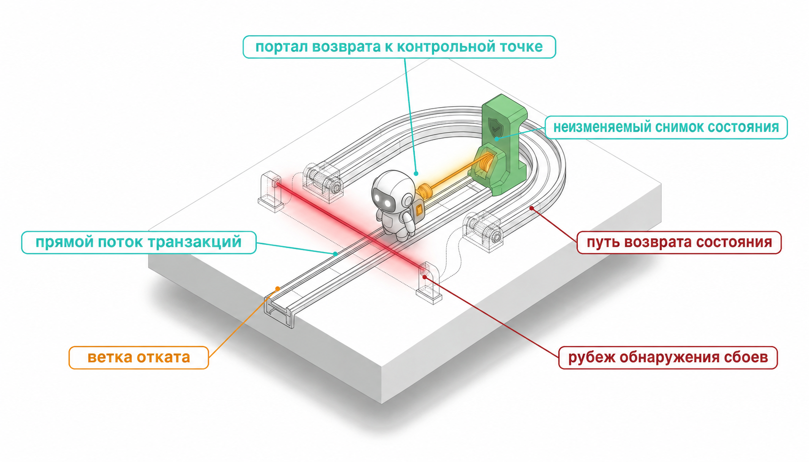
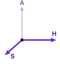
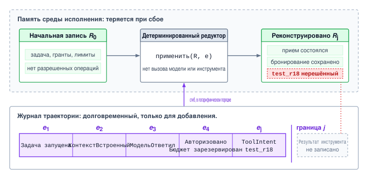
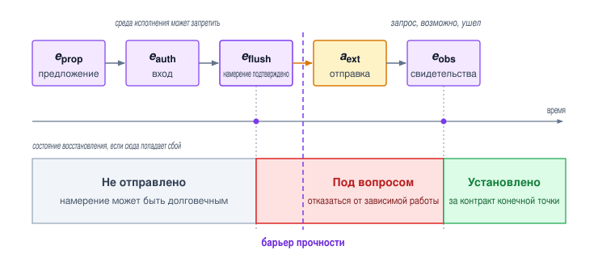
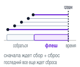
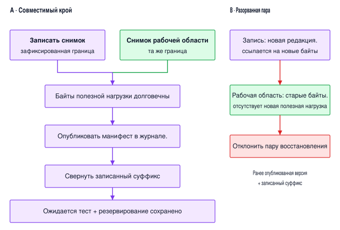
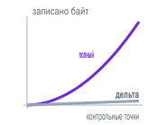
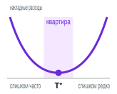
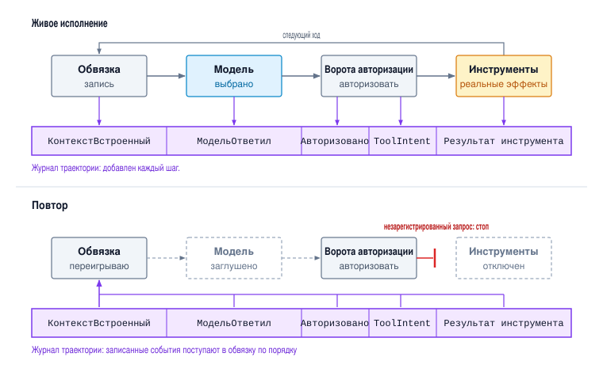

Содержание главы
Содержание
- 11 Долговременное исполнение
- 11.1 Отказ рабочего процесса посреди траектории
- 11.2 Журнал траектории
- 11.3 Долговременный intent до диспетчеризации
- 11.4 Контрольные точки
- 11.5 Возобновление траектории
- 11.6 Проигрывание записанной траектории
- 11.7 Локализация расхождения
- 11.8 Хранение журналов и сжатие состояния
- 11.9 Заблуждения и ловушки
- 11.10 Итоги
- 11.11 Исторический обзор и дополнительная литература
- 11.12 Упражнения
11 Долговременное исполнение

Назначение
Почему агент должен записать то, что он собирается сделать, до того, как он это сделает?
Реальные задачи агента — например, миграция корпоративной базы данных или отладка распределённой кодовой базы — выполняются минуты, часы или дни: достаточно долго, чтобы перезапуски процессов, вытеснение узлов и скользящие обновления перестали быть редкими событиями и стали частью рабочей нагрузки. Каркас (harness), контролирующий такую задачу, хранит свою управляющую запись в памяти одного рабочего процесса, а контекст модели содержит лишь отобранный транскрипт, так что один сбой стирает допущенные операции, удерживаемые резервации и ожидающие одобрения — то, что подсказало бы преемнику, что может произойти дальше. Перезапуск с исходного промпта не просто медленен: он заново сэмплирует стохастическую модель и может повторить уже вышедший наружу внешний эффект, например развёртывание или платёж. Долговременное исполнение (durable execution) отвечает на это дисциплиной упорядочения, унаследованной от обработки транзакций. Среда исполнения добавляет каждое решение и наблюдение в журнал, который переживает рабочий процесс, делает каждое задуманное действие долговременным до его отправки и восстанавливает управляющее состояние свёрткой этой истории, а не повторным вопросом модели. Журнал всё же не может сообщить, что случилось с запросом, ответ на который так и не пришёл, и именно сохранение этой неоднозначности на виду, а не её угадывание, позволяет состоянию пережить долгий горизонт, не искажая мир, в котором действует агент.
Цели обучения
- Построить журнал траектории, свёртка которого восстанавливает управляющее состояние, не принимая записанные утверждения за истину о мире
- Применить упорядочение «намерение до отправки» в рамках объявленного домена отказов, оценить цену подтверждения и классифицировать, что каждая позиция сбоя позволяет заключить восстановлению
- Выбрать представление и периодичность контрольных точек исходя из объёма записи, паузы захвата и стоимости восстановления
- Спроектировать политику возобновления, которая согласует невыполненные обязательства при актуальном владении в рамках пошагового бюджета задержки
- Различать путешествие во времени по записанной проекции, регрессионный реплей каркаса и контрфактические ветви по тому заключению, которое позволяет сделать каждая
- Диагностировать первое расхождение между двумя исполнениями по захваченным входам, указывая, чего доказательства установить не могут
- Спроектировать политики удержания, сохраняющие те байты, которые требуют каждое заявленное обещание восстановления, реплея и диагностики
11.1 Отказ рабочего процесса посреди траектории

Горизонт растягивает состояние за пределы жизни одного рабочего процесса, поэтому продолжение требует долговременной записи.
Рассмотрим агента по исправлению ПО (Четыре маяка — рабочие нагрузки), который допустил и отправил интеграционный тест против ws_r18 — фиксированного снимка рабочего пространства кандидата-патча r18. Прежде чем тестовый раннер сообщит результат, процесс рабочего падает, или хост подвергается вытеснению на споте (внезапному изъятию эфемерного облачного узла). Замещающий рабочий процесс не может просто повторно вызвать модель с исходным промптом. Начало заново отбрасывает контекст: ожидающий вызов теста, активные токены полномочий и резервации ресурсов, любое состояние паузы, подтверждённое оператором, и любые свидетельства того, принял ли удалённый исполнитель задачу, завершил ли её или потерпел неудачу. Хуже того, исходный тестовый набор может всё ещё исполняться на удалённом кластере, наращивая финансовые расходы и изменяя состояние песочницы, в то время как вновь запущенная модель избыточно отправляет конфликтующую команду. Этот сбой — с отправленным, но не отчитавшимся тестом — является сквозным учебным примером главы, и каждый раздел спрашивает, что говорит о нём уцелевшая запись.
Каркас агента уже отслеживает большую часть того, что требуется замещающему рабочему процессу. Его живая запись траектории отделяет ожидающие продолжения исполнения от невыполненных внешних обязательств, а его проверки допуска определяют, какие действия могут пересечь границу среды исполнения. Однако в наивной реализации обе структуры находятся исключительно в энергозависимой памяти хоста и исчезают в момент отказа рабочего процесса. Контекстное окно модели не может подменить это операционное состояние. Контекст большой языковой модели (LLM) содержит лишь эпизодический транскрипт, сформированный ограниченными окнами наблюдений и компоновкой промпта; в нём нет записи о находящихся в полёте сетевых сокетах, допущенных токенах полномочий или активных счётчиках облачного биллинга. По мере расширения горизонта исполнения на десятки ходов и долгоживущие внешние задачи отказы рабочих процессов, вытеснение узлов и скользящие обновления смещаются из редких аномалий в операционные неизбежности.
↩︎ Запись траектории, хранящая ожидающие продолжения и невыполненные обязательства, вводится в Запись траектории.
Переживание отказов посреди траектории требует долговременной истории: журнала с последовательным добавлением записей, упорядоченного, содержащего каждое решение, допущенное действие и полученное наблюдение. Имея такой долговременный журнал, замещающий рабочий процесс может детерминированно восстановить состояние агента, согласовать побочные эффекты, уже достигшие внешних систем, и безопасно возобновить исполнение под действующими полномочиями. Эта способность и есть предмет главы. Траектория обладает свойством долговременного исполнения, если другой рабочий процесс, после любого отказа, который среда исполнения объявляет переносимым, может восстановить управляющее состояние траектории и её невыполненные обязательства из уцелевших записей и продолжить её, не потеряв уже вышедший наружу эффект и не повторив какой-либо из них небезопасно. Одно правило упорядочения делает это возможным. При упреждающей записи (write-ahead durability) запись о задуманном действии становится долговременной до того, как действие будет отправлено по сети. Это правило — механический ответ среды исполнения на экспозиции горизонта и состояния, граница, установленная ниже модели, которую не может дать никакой промпт. Оно несёт измеримые издержки: задержку подтверждения при каждой отправке, паузы захвата в контрольных точках и время восстановления при реанимации.
Глава строит долговременную среду исполнения в том порядке, которого требует сбой. Сначала журнал траектории (Глава 11.2) определяет запись, из которой чистый рабочий процесс восстанавливает управляющее состояние, а долговременное намерение до отправки (Глава 11.3) упорядочивает эту запись относительно внешних эффектов, оценивая цену подтверждения, которую требует каждый домен отказов. Свёртка неограниченного журнала и восстановление изменённых файлов с нуля слишком медленно росли бы на длинных прогонах, поэтому контрольные точки (Глава 11.4) привязывают управляющую запись к снимкам рабочего пространства через регулярные интервалы. Протокол возобновления (Глава 11.5) затем превращает это восстановленное состояние в авторизованное продолжение под новым владельцем. Те же долговременные записи затем служат офлайн-отладке. Реплей (Глава 11.6) инспектирует или тестирует историю без новых вызовов модели, локализация расхождений (Глава 11.7) находит самую раннюю границу, где два исполнения разошлись, а удержание (Глава 11.8) решает, какие из этих обещаний восстановления и реплея сохранённые байты ещё способны выполнить. Каждый механизм отвечает на центральный вопрос учебного сбоя, устанавливая, что доказывает уцелевшая запись и какая неоднозначность остаётся неразрешённой.
11.2 Журнал траектории
Замещающий рабочий процесс может восстановить упавшую траекторию только из того, что упавший рабочий процесс записал в место, пережившее его самого, поэтому первый вопрос проектирования — что значит «пережить его». Если хост рабочего процесса и его подключённый диск уничтожаются вместе посреди хода, замещение на независимой машине возможно лишь тогда, когда подтверждённая история уже реплицирована в независимое хранилище. Долговременность, следовательно, имеет смысл только относительно явной модели отказов, называющей, какие отказы должна переживать сохранённая история. Инженеры систем называют эту границу доменом отказов — множеством отказов, через которые сохраняется гарантия персистентности. Повторяются три яруса возрастающей тяжести: падение процесса, при котором хранилище хоста остаётся целым; замена узла рабочего процесса при выжившем общем сетевом томе; и безвозвратная потеря этого яруса хранилища. Каждый ярус требует более сильной репликации и более широкой физической изоляции отказов, и Глава 11.3.1 оценивает цену подтверждения для каждого из них. Учебный пример сбоя нацелен на самый сильный ярус, при котором подтверждённая история событий и все артефакты, необходимые для восстановления, переживают одновременное уничтожение хоста рабочего процесса и его диска. Каждое утверждение о долговременности в этой главе делается относительно этого контракта.
11.2.1 Журнал как записанное свидетельство
Переживание домена отказов решает, где живут байты, но оставляет открытым, что эти байты должны записывать, чтобы замещающему рабочему процессу никогда не пришлось спрашивать модель о том, что произошло до сбоя. Повторный промпт модели с её последнего видимого сообщения не может восстановить прошлее управляющее состояние, потому что стохастическое сэмплирование и изменившаяся внешняя среда уводят траекторию по другому пути. Вместо этого среда исполнения отделяет состояние исполнения от времени жизни процесса, записывая хронологическую историю с последовательным добавлением записей — каждое решение и каждое наблюдение за всю траекторию.
Определение 11.1: Журнал траектории
Журнал траектории — это упорядоченная последовательность типизированных событий с добавлением записей (включая доставленные модели промпты, возвращённые завершения, авторизации ресурсов, переходы управления и наблюдаемые исходы инструментов), из которой детерминированный редьюсер восстанавливает управляющее состояние траектории агента.
- Значимость: Восстановление сворачивает записанные решения последовательно, а не переисполняет завершённые ходы. Поэтому сбой на позднем этапе длинной траектории стоит лишь времени детерминированного реплея. Он избегает свежих вызовов модели, которые вновь подвергли бы систему накоплению ошибок из Уравнение (1) и накопили бы избыточные расходы токенов против бюджета попытки задачи из Уравнение (2).
- Различие: Запись траектории (определение 10.2) — это живая проекция в памяти, управляющая ближайшим следующим решением. Журнал траектории — это неизменяемая история с добавлением записей, из которой выводится эта запись. Контекстное окно — это транзитная, отобранная последовательность токенов, подаваемая модели.
- Типичная ошибка: Записывать только результаты инструментов, опуская отправки операций. Если допущенный вызов инструмента падает посреди исполнения или теряет сетевой ответ, отсутствие записи о намерении оставляет восстанавливающий рабочий процесс в неведении, что внешний побочный эффект может уже быть в полёте.
Формально журнал — это последовательность
Когда агент уточняет более раннюю гипотезу или сталкивается с неожиданной ошибкой инструмента, он добавляет свежие свидетельства в хвост журнала, а не изменяет исторические записи на месте.1 Активная запись траектории представляет собой накопленную проекцию по этому потоку с добавлением записей. Начиная с базового состояния
В этой формулировке test_r18 и не выдумывает исход теста.

Инженеры должны различать журнал траектории и активное контекстное окно модели. Сборка контекста избирательна и эфемерна: компиляция промпта фильтрует прошлые взаимодействия, а компоновка контекста периодически заменяет многословные выводы команд краткими сводками. Журнал траектории, напротив, сохраняет точные доставленные входы и операционные решения, требуемые реплей-контрактом системы. Для усечённого наблюдения журнал хранит точный байтовый срез, предъявленный модели, а не полный, неурезанный поток вывода, порождённый инструментом. Восстановление состояния воспроизводит только то, что было долговременно захвачено. Скомпонованная сводка реплеится как сводка, а записанный хэш полезной нагрузки может проверить те байты, лишь пока сама сохранённая полезная нагрузка существует (Глава 11.8.2 развивает это разделение дайджестов и байтов).
11.2.2 Схема события журнала
Если запись журнала фиксирует лишь то, что инструмент был вызван, не захватывая аренду рабочего процесса, эпоху управления или границу резервации, замещающий рабочий процесс не сможет определить, принадлежит ли поздний колбэк аннулированному ходу и сколько бюджета остаётся заблокированным. Журнал событий поддерживает надёжное восстановление лишь тогда, когда его схема захватывает операционные метаданные, необходимые следующим рабочим процессам для ответа на эти вопросы. Таблица 1 группирует эти семейства событий по их ролям при восстановлении. Эти схемы определяют логические границы событий, а не требуют изолированных физических записей в хранилище для каждого отдельного поля. Например, высокопроизводительная среда исполнения может слить проверки авторизации, резервации бюджета и намерения отправки инструментов в одну пакетную транзакцию записи, при условии, что детерминированный редьюсер сохраняет их причинные зависимости. Движок хранения должен также долговременно подтвердить пакет до отправки (упорядочение, которое развивает Глава 11.3).
Каждый конверт события содержит идентификатор траектории, уникальный идентификатор события, монотонно возрастающий sequence_number, теги типа и версии схемы, а также сведения о происхождении — арендаторе или эмитенте. Кроме того, журнал фиксирует активную версию редьюсера вместе с идентификатором аренды воркера, при которой были приняты добавления. Внутри этого конверта sequence_number задаёт полный порядок событий, а record_version отслеживает изменения конечного автомата. control_epoch — это контрольный барьер каркаса: он увеличивается всякий раз, когда пауза, отмена или прерывание делают недействительными находящиеся в полёте продолжения, поэтому наблюдение с более старой меткой эпохи не может продвинуть текущую. Отдельный owner_epoch считает передачи владения траекторией, благодаря чему хранилище может отклонить добавление от воркера, чьё владение уже перешло другому (механизм барьеров из Глава 11.5.1). Ни передача владения между воркерами, ни увеличение control-эпохи не меняют уникальную логическую идентичность находящейся в полёте операции.
↩︎ Барьеры эпох (epoch fencing), не позволяющие устаревшему асинхронному ответу продвинуть текущее продолжение, введены в Защиты переходов и проверка допуска.
| Семейство событий | Обязательное содержимое | Применение при восстановлении |
|---|---|---|
TaskStarted |
Задача и запросивший её субъект, начальные предоставления и лимиты, обычный и финализационный дедлайны, начальные ссылки на запись и рабочее пространство, происхождение конфигурации | Установить исходные рамки и договор учёта |
ContextBuilt, ModelReplied |
Идентичность вызова модели, неизменяемый манифест доставленных входных данных и байты либо доступные ссылки, конфигурация сборки и запроса, статус и полезная нагрузка ответа, сырые сигналы и доступные сведения о происхождении у провайдера | Восстановить, что было подано и наблюдено, не пересэмплируя исторический вызов |
Authorized, BudgetReserved, BudgetSettled |
Решение и версия политики, идентичность вызова или операции, граница резервирования, фактические свидетельства использования, оставшаяся неразрешённая ответственность, защищённый финализационный резерв | Восстановить допуск и учёт, а не просто скаляр остатка баланса |
ToolIntent, ToolResult |
Идентичности логической операции и транспортной попытки, представляемая операция и её аргументы, применимая ревизия и договор о повторении, хэндл задания, если известен, свидетельства исхода и полнота наблюдения | Сохранить возможную диспетчеризацию и её свидетельства; ожидающий, частичный или истёкший по таймауту результат не устанавливает расчёт |
ControlChanged, PlanChanged |
Запрос управления и его эмитент, изменения охраняемого состояния и предоставлений, версии записи и управления, ревизия плана и зависимости, право на наблюдение, владельцы ресурсов и невыполненных обязательств | Восстановить продолжение отдельно от работы, оставшейся неразрешённой |
ApprovalRequested, ApprovalResolved |
Точное удерживаемое действие и соответствующие версии, уполномоченный проверяющий и свидетельства решения, срок действия, статус отзыва или отказа | Восстановить удерживаемое решение, не трактуя старое одобрение как текущее разрешение на диспетчеризацию |
Compacted, RuntimeInput |
Записанная сводка и зависимости; часы, идентификаторы, входные данные политик/конфигурации и информация о порядке событий, захваченные на объявленной границе повтора, где повтор подставляет записанные входные данные вместо живых | Сохранить фактические входные данные, использованные сборкой контекста или надзирающими решениями |
Checkpoint |
Точно покрытая граница журнала, совместимые манифесты записи и рабочего пространства, ссылки на необходимые артефакты и информация о целостности | Выбрать доступную базу для восстановления записи и рабочего пространства через последующий суффикс |
Рабочий лист по исправлению ПО иллюстрирует, как эти идентификаторы связывают распределённые события жизненного цикла. Наряду со снапшотом рабочего пространства ws_r18 идентификатор operation_id=test_r18 обозначает логический запуск набора тестов, а attempt_id=attempt1 отслеживает конкретную сетевую транспортную попытку. Если асинхронный исполнитель тестов возвращает подтверждение, содержащее идентификатор задания в кластере, например job_tests_18, этот хэндл связывает будущие асинхронные обратные вызовы с исходной операцией. Однако восстанавливающийся воркер может обнаружить эту связь, только если подтверждение было долговременно сброшено в журнал до сбоя. Долговременный ToolResult может фиксировать активное состояние исполнения, таймаут или завершённый отчёт о тестах; редьюсер интерпретирует эти полезные нагрузки согласно их аутентифицированному происхождению. Если асинхронное исполнение завершается после того, как супервизор уже прервал по таймауту охватывающий шаг, запоздавший ToolResult обновляет таблицу операций, а не портит устаревшую ветку исполнения.
↩︎ Протокол права на наблюдение, направляющий запоздавшие результаты в таблицу операций, а не в активный ход, введён в Запоздалые результаты и допуск наблюдений.
Захват контекста модели требует не меньшей тщательности в отношении неизменяемости. Манифест в ContextBuilt должен фиксировать точную токенизированную полезную нагрузку или поток байтов, доставленных по сети, а не изменяемые пути файловой системы или внешние URL, которые могут мутировать до момента восстановления. Журнал также должен захватывать доступные сведения о происхождении инференс-движка (контрольные точки моделей, версии систем обслуживания моделей и конфигурации декодирования), фиксируя любые пробелы, поскольку идентификаторы хостинг-моделей часто скрывают обновления исходных весов или изменения инференс-движка. При возобновлении исполнения замещающий воркер может собрать обновлённый контекст промпта из недавних свидетельств, сохраняя исторические записи вызовов в точности такими, какими они были доставлены.
Определение схемы события задаёт, что требуется для восстановления состояния, но одни определения схемы не гарантируют, что записи достигнут диска прежде, чем агент отправит сетевые запросы. Если среда исполнения сохраняет завершение модели, но падает до сброса последующего интента инструмента, восстанавливающийся воркер не может определить, был ли отправлен внешний вызов инструмента, — возникает риск дублирующихся побочных эффектов. Чтобы устранить эту уязвимость, среда исполнения должна обеспечивать строгий упреждающий порядок записи между журналированием операционного интента и выпуском его сетевой диспетчеризации.
11.3 Долговременный intent до диспетчеризации
В рабочем листе о сбое следующий шаг воркера по исправлению — отправить test_r18 против рабочего пространства ws_r18. Если каркас диспетчеризует этот тестовый запрос по сети и падает до того, как запись ToolIntent достигнет долговременного хранилища, замещающий воркер, сворачивающий уцелевший журнал, восстановит план, который всё ещё говорит «запустить тест». Тем временем исходное задание уже исполняется на удалённом кластере и наращивает расходы. Фиксация только итогового результата оставляет этот слепое пятно открытым при каждом вызове. Чтобы предотвратить дублирующиеся запуски и неучтённую финансовую ответственность, среда исполнения должна зафиксировать принятый запрос и его резервирование в постоянном хранилище до того, как запрос покинет её контроль.
Долговременная фиксация принятого запроса до его диспетчеризации — это классическое упреждающее журналирование (write-ahead logging), применённое к диспетчеризации траекторий. Долговременная история гарантирует, что при восстановлении можно опознать каждую внешнюю операцию, которая могла начаться, даже если сетевые разделения или сбои не позволяют воркеру получить ответ. В рамках объявленной модели отказов среды исполнения внешняя мутация, произошедшая без восстановимого свидетельства намерения, является фантомным эффектом. Устранение фантомных эффектов требует двух гарантий: строгого упреждающего порядка записи в конвейере исполнения среды и хранилищной основы, надёжно переживающей те отказы, против которых система заявляет устойчивость. Вместе они образуют принцип Части IV «намерение до воздействия» (принцип «Намерение до эффекта»), порядок которого этот раздел выводит (Уравнение 1), а его хранилищную половину — оценивает в стоимости.
↪ Форма упреждающего журналирования в базах данных и то, почему среда исполнения заимствует его порядок, но не его контроль над удалённым состоянием, раскрыты в Классический материал о транзакциях.
Определение 11.2: Долговременная запись намерения
Долговременный intent — это неизменяемая запись принятой операции, фиксирующая её идентичность, входные аргументы, ссылку на решение об авторизации и предоставленную способность, а также резервирование бюджета, подтверждённая хранилищем, которое переживает объявленный домен отказов до отправки запроса.
- Значимость: она превращает сбой между диспетчеризацией и ответом из неучтённого фантомного эффекта в неразрешённую операцию с явным владельцем — ценой размещения одного долговременного подтверждения на критическом пути каждой диспетчеризации (Таблица 2).
- Отличие: долговременный intent фиксирует, что работа могла уйти во внешнюю среду. Он не удостоверяет, что удалённая конечная точка зафиксировала или исполнила работу, и не требует, чтобы восстановившийся воркер обязательно исполнил её повторно.
- Типичная ловушка: принятие подтверждения от хранилища, разделяющего границу отказов, против которой дизайн заявляет устойчивость, — например, запись на локальный scratch-том в рамках системного контракта, обещающего устойчивость к потере хоста или тома.
Intent ссылается на предоставленную способность, а не копирует в себя секрет. Журнал, хранящийся месяцами и читаемый при повторе, — неподходящее место для учётных данных, поэтому секрет остаётся у брокера учётных данных, а восстановившийся воркер получает свежее право его использования только пройдя допуск при текущем владении.
↩︎ Брокер учётных данных, хранящий секрет вне гостя и использующий его от имени авторизованного запроса, введён в Брокеринг учётных данных.
11.3.1 Подтверждение и домен отказов
Предположим, воркер по исправлению добавляет intent test_r18 стандартным вызовом POSIX write(), наблюдает успешный возврат и незамедлительно отправляет тест. Затем хост мгновенно теряет питание. Успешный write() гарантирует лишь то, что ядро скопировало полезную нагрузку в свой страничный кэш; эти «грязные» страницы испаряются, если питание пропадает до обратной записи на диск. Когда замещающий воркер загружается, он обнаруживает пустой журнал, совершенно не зная, что удалённый тест уже активен. Следовательно, возвращённый write() покрывает только первый домен отказов из Глава 11.2 — сбой процесса на неповреждённом хосте, — не давая никакой защиты от потери питания хоста.
Это рассуждение распространяется вверх по иерархии отказов. Если воркер выходит из строя, замещающий процесс может восстановиться, используя повторно подключаемое блочное хранилище, при условии, что замещающий процесс может смонтировать диск и прочитать подтверждённые журнал и артефакты. Если домен отказов включает необратимое уничтожение тома хранения воркера — как в облачных средах, где spot-инстансы или отказы основного оборудования уничтожают эфемерные диски, — подтверждение должно исходить от сервиса хранения вне этого тома. Одна лишь удалённость не удовлетворяет этому требованию. Асинхронная реплика, обновляемая в фоновом режиме, может отставать от первичного журнала, оставляя замещающий воркер с неполной историей на время переключения.
Каждый шаг вверх по иерархии отказов требует соответственно более сильного барьера персистентности. Пережить потерю питания хоста требуют fsync() или fdatasync(), которые возвращаются лишь после того, как устройство хранения сообщит, что данные достигли стабильного носителя. Эти два системных вызова различаются обращением с метаданными: fsync() сбрасывает атрибуты файла, такие как временные метки модификации, тогда как fdatasync() сбрасывает только метаданные, строго необходимые для чтения полезной нагрузки обратно. Для журнала траектории, который преаллоцирует свои дисковые файлы, использование fdatasync() устраняет ненужное обращение к диску и запись метаданных на каждый барьер. Даже с этими системными вызовами остаются тонкие режимы отказов.2 Если диск содержит энергозависимый кэш записи, он должен выполнить команду сброса диска, прежде чем подтверждение действительно покроет потерю питания. В качестве альтернативы запись должна задавать Force Unit Access (флаг на запись, полностью обходящий кэш диска). Однако даже верифицированный локальный барьер не переживёт катастрофическую потерю физического диска или тома. Пережить необратимую потерю тома требует реплицированный движок хранения, который возвращает подтверждение успеха только после того, как кворум реплик, распределённых по различным доменам отказов, зафиксировал запись.3 Рабочий лист требует двух долговременных копий вне тома воркера до диспетчеризации. Эта выбранная политика размещения сильнее, чем одно лишь требование пережить потерю одного тома; Таблица 2 перечисляет подтверждения, удовлетворяющие заявленным договорам.
| Отказ, который переживает договор | Подтверждение, которое его переживает | Подтверждение, которое не переживает |
|---|---|---|
| Сбой процесса; хост и том целы | Возвращённый write(), который помещает байты в страничный кэш ядра, переживающий процесс |
Событие, поставленное в очередь только в собственной памяти среды исполнения |
| Потеря питания или сбой хоста; том цел | Возвращённый fdatasync() или fsync(), с сброшенным или обойдённым кэшем записи устройства |
Один лишь возвращённый write(), чьи «грязные» страницы были энергозависимы |
| Необратимая потеря тома воркера | Подтверждение от реплицированного хранилища после того, как две реплики вне домена отказов этого тома сделали запись долговременной, в рамках дополнительной политики размещения рабочего листа | Локальный барьер плюс асинхронная копия, которая могла ещё не прийти |
Реализация должна точно определять, какие режимы отказов покрывает её слой персистентности, как ошибки хранения проявляются для приложения и как замещающий воркер обнаруживает полную авторитетную историю. Движки хранения предоставляют механические примитивы, но договор долговременности должен установить системный архитектор. Когда подтверждение завершается ошибкой или таймаутом с неоднозначным статусом, среда исполнения должна удержать диспетчеризацию и разрешить добавление согласно договору хранения. Разрешение означает повторное чтение авторитетного журнала. Если intent присутствует, попытка принята, но ещё не отправлена, поэтому пауза или неудачная повторная проверка могут по-прежнему её удерживать. Если полный авторитетный префикс его не содержит, воркер добавляет его снова под той же идентичностью события, и хранилище дедуплицирует её, если первое добавление всё же произошло. Удержание диспетчеризации во время отказа хранения может временно остановить прогресс, но диспетчеризация до подтверждения необратимо уничтожает свидетельства, необходимые для управления находящейся в полёте работой после сбоя.
↪ Почему заявление о долговременности должно называть и своё подтверждение, и переживаемые отказы, и чем долговременность отличается от атомарности и изоляции, раскрыто в Границы гарантий.
11.3.2 Порядок долговременного допуска
Если воркер проверяет предложение и резервирует бюджет в памяти (Защиты переходов и проверка допуска), но отправляет сетевой вызов до возврата подтверждения от хранилища, сбой в этом зазоре оставляет неучтённый фантомный эффект. Долговременное исполнение закрывает это окно, вставляя подтверждённую запись intent между допуском и сетевым выпуском. Для попытки, которая переходит к диспетчеризации и позже производит наблюдение, порядок таков
В Уравнение 1 ToolIntent и требуемые предшествующие записи в пределах объявленного домена отказов. Действие

В рабочем листе сценария сбоя интент называет operation_id=test_r18, attempt_id=attempt1, неизменяемый вход ws_r18, выбранную проверку и контракт повтора конечной точки. Он ссылается на применимые решения Authorized и BudgetReserved вместе с привязками запросчика и задачи, control_epoch и owner_epoch, при которых они были приняты. Восстановимый префикс должен реконструировать само принятое резервирование, а не просто оставшийся баланс.
Пока барьер не пройден, принятие и управление остаются согласованными. Операторская пауза или административное изменение полномочий всё ещё может перехватить и удержать принятый, но не отправленный запрос, поскольку запись долговременного интента фиксирует разрешение на отправку, а не безотзывное обязательство исполнить. Контроль отправки в каркасе — последний шлюз перед уходом запроса — заново проверяет принятую попытку против текущего состояния управления, не резервируя вторую порцию бюджета. Если механизм выпуска уже отправил запрос в сеть, последующие управляющие действия обязаны считать запрос отправленным. Напротив, удержанный запрос сохраняет свою запись в таблице операций и зарезервированный бюджет до тех пор, пока проверенные свидетельства не подтвердят, что никаких удалённых побочных эффектов или финансовых обязательств не осталось.
↩︎ Контрольные повторные проверки при отправке, повторяющие проверки бюджета, полномочий и согласований в момент выпуска, описаны в Перепроверки на момент диспетчеризации.
Вызовы foundation-моделей требуют той же строгости в отношении идентичности и обязательств. Генерация токенов течёт через сетевые сокеты, и прерванный вызов может привести к расходам в счёте провайдера, даже если сбой воркера помешал клиенту когда-либо записать вывод. Поэтому то же упорядочивание покрывает и вызовы моделей. Запись ContextBuilt и решение о вызове BudgetReserved становятся долговременными до ухода запроса, так что сбой в середине потока оставляет записанный вызов без ModelReplied. Восстановление считает такой вызов сомнительным только в части списания, которое оно погашает по свидетельствам использования от провайдера. Потерянный ответ нельзя восстановить повтором промпта, поскольку стохастическая выборка порождает другое завершение, поэтому восстановление отбрасывает любой частичный поток и никогда не переигрывает вызов. Любая повторная попытка — это отдельный принятый вызов, требующий новой идентичности вызова, провалидированных запроса и контекста, актуальных проверок принятия и долговременного резервирования бюджета до отправки.
11.3.3 Свидетельства восстановления и правило полноты
Первое из трёх состояний восстановления на Рисунок 2 (не отправлено) несёт скрытое предусловие. После сбоя восстанавливающийся воркер может трактовать отсутствие записанного интента как доказательство того, что отправка не происходила, только если он располагает полным авторитетным историей, обещанным доменом отказов. Это требование — правило полноты. Асинхронно обновляемая реплика чтения не может удовлетворить этому правилу, потому что реплика не отличает операцию, которая ни разу не отправлялась, от интента, чья запись в журнале ещё не дошла по сети. Таблица 3 очерчивает состояния восстановления, регулируемые этим правилом.
| Сохранившиеся свидетельства | Что они устанавливают | Последствия для продолжения |
|---|---|---|
| Нет долговременного интента в полном авторитетном префиксе при принудительной write-ahead отправке | Эта попытка не была отправлена через опосредованный путь | Пересмотреть записанный proposal при актуальных проверках принятия; не отправлять автоматически |
| Долговременный интент плюс адекватные, коррелированные свидетельства исхода | Записанный исход установлен в той мере, в какой это допускает контракт конечной точки | Повторно использовать эти свидетельства в рамках их области кандидата и проверки; при необходимости списания производить отдельно |
Долговременный интент без адекватных свидетельств исхода, включая таймаут или ожидающий ToolResult |
Операция находится в состоянии сомнения | Сохранить её идентичность, обязательства и владельца погашения; удерживать зависимую работу, пока её предохранители не позволят продолжение |
В сценарии рабочего листа сбоя отправленный тест мог не дойти до сервиса, мог всё ещё исполняться на удалённом раннере или мог завершиться непосредственно перед сбоем воркера. Если ответ исполнителя, принимающий задачу, так и не был записан, его дескриптор задачи job_tests_18 теряется вместе с воркером. Для разрешения этой неоднозначности среда исполнения выполняет адресный поиск по записанной идентичности операции, аутентифицируя и коррелируя любые вновь обнаруженные свидетельства перед обновлением таблицы операций. Проверенный результат теста устанавливает проверку для ws_r18; принимать ли ремонт в целом — отдельное политическое решение.
Статус сомнения отражает неопределённость среды исполнения, а не внешний сбой, и его разрешение — вопрос к конечной точке. Идентичность операций и контракты конечных точек описывает требования к конечной точке, необходимые для безопасного повтора: строгая ограниченность идентичности, привязка к неизменяемому полезному грузу, сохранение результатов прежних исполнений, обработка конкурентных запросов в полёте и координация между мутациями состояния и возвращаемыми значениями. Предоставленный клиентом ключ идемпотентности защищает только те конечные точки, которые реализуют эти семантики. Прозондирование конечной точки по имени ресурса даёт куда более слабые гарантии: совпадающее имя может принадлежать несвязанной операции, а отсутствие ресурса — говорить о том, что задержавшийся исходный запрос всё ещё в пути. Для сомнительного действия долговременное исполнение, следовательно, применяет погашение перед повтором (принцип «Урегулирование до повтора») без изменений. Журнал поставляет идентичность операции и её свидетельства, и только контракт конечной точки или положительное свидетельство исхода даёт право на новую попытку.
↪ Контракты идемпотентности и дедупликации, лежащие в основе безопасного повтора, развиты в Повторы и восстановление результатов.
Системный взгляд 11.1: Ведение журнала с упреждающей записью, от страниц до конечных точек
Когда сохранившиеся свидетельства недостаточны для разрешения действия, таблица операций сохраняет назначенного владельца для сверки или явного вмешательства оператора сквозь таймауты, паузы и терминальные пути исполнения. Независимые ветви исполнения могут идти вперёд под собственными предохранителями, пока зависимые операции ждут разрешения. Исправить установленный, но нежелательный эффект призвано компенсирующее действие — последующая операция, которая его отменяет или возмещает; её развивает Паттерн «сага траектории».
11.3.4 Групповая фиксация
«Интент до эффекта» ставит одно долговременное подтверждение на критический путь каждой отправки. Для одиночной траектории цена невелика, поскольку подтверждение масштаба миллисекунд соседствует с ходом, тратящим секунды на работу модели и инструментов. Цена, которая имеет значение, — пропускная способность. Среда исполнения агента, управляющая десятками конкурентных траекторий, платит за этот барьер отдельно за каждую отправку, и каждая отправка во всём флоте стоит в очереди к одному и тому же хранилищу. При контракте реплицированного кворума рабочего листа каждый барьер — это сетевой раунд-трип к удалённым узлам хранилища. Групповая фиксация4 смягчает эти накладные расходы, объединяя несколько готовых записей журнала в одно общее подтверждение хранилища (DeWitt и др. 1984 г.). Координатор батчей агрегирует ожидающие записи интентов, выполняет одну консолидированную запись в реплицированное хранилище и разблокирует отдельные отправки только после успешного подтверждения кворума. Даже внутри батча каждая отдельная траектория строго выдерживает порядок write-ahead интентов перед передачей.

Каждый участник батча ждёт весь общий сброс на диск; делится только работа хранилища.
Для успешного батча пусть
Первый член в Уравнение 2 отражает задержку очереди и агрегации в батч, а второй член — общую физическую задержку хранилища. Если батч содержит
Увеличение размера батча снижает накладные расходы хранилища на запись, но увеличивает задержку очереди, которую испытывают ранние участники. При лёгком трафике доминирует задержка агрегации, из-за чего таймер сброса батча становится существенным для ограничения хвостовой задержки. Под тяжёлой нагрузкой амортизация пропускной способности держит глубины очередей управляемыми, хотя очень крупные полезные грузы могут со временем раздувать саму операцию хранилища. При таймере 2 мс и подтверждении кворума за 4 мс батч из 16 интентов несёт лишь 0.25 мс амортизированной работы хранилища на интент. Однако первый участник ждёт 6 мс, и даже последний участник всё ещё ждёт полные 4 мс раунд-трипа хранилища. Поэтому корректный дизайн подбирает таймер батча в рамках допустимого бюджета задержки отправки, инструментирует задержку очереди отдельно от времени обслуживания хранилища и никогда не ослабляет объявленный домен долговременности ради экономии миллисекунд на задержке отправки.
Контрольная точка 11.1: Домен отказа, доказательства и область долговременности
Журнал упреждающей записи (write-ahead logging) защищает идентичность и обязательства действий, покидающих среду исполнения, но одна лишь история событий не позволяет восстановить состояние измененных файлов, репозиториев кода или сред обучения. Поэтому каждая граница журнала должна быть связана с проверенным снимком окружающего рабочего пространства, чтобы восстанавливающийся воркер возвращал точный контекст исполнения, в котором эти действия были выполнены.
11.4 Контрольные точки
Долговременное намерение сообщает воркер-замене, что такая операция, как тест r18, возможно, началась, но оно не хранит файлы, к которым тест реально обращался. Журнал исполнения, зафиксировавший успешное изменение, не может восстановить измененные байты, если эти байты — или реконструируемые дельты относительно известной базы — не сохранены в хранилище. Следовательно, долговременное исполнение требует, чтобы управляющая запись и изменяемое рабочее пространство имели общую границу восстановления.
Контрольная точка связывает восстанавливаемый снимок записи, связанные с ним файлы рабочего пространства и все необходимые внешние артефакты с точной зафиксированной позицией журнала. Контрольные точки ускоряют восстановление, заменяя неограниченный префикс исторических событий одним совместимым снимком. Эта архитектурная контрольная точка отличается от компактного резюме прогресса, используемого для сборки контекста промпта: резюме промпта LLM не может восстановить сырые байты файловой системы, доказать ресурсные обязательства или отследить незавершенные внешние операции.
11.4.1 Согласованные границы восстановления
Если среда исполнения снимает управляющую запись в один момент, а каталог рабочего пространства копирует несколькими секундами позже, пока инструмент пишет файлы, восстановление пары даст разорванное (torn) состояние. В разорванном состоянии запись ссылается на байты файлов, которых нет в снимке, — или наоборот.5 Поэтому контрольная точка должна заморозить обе половины в авторитетной позиции журнала
Два дизайна фиксации сохраняют согласованность записи и файловой системы в точке
Публикация снимка должна строго следовать за доступностью данных. Сначала среда исполнения фиксирует согласованное состояние и сбрасывает все лежащие в основе байты в долговременное хранилище в пределах домена отказа. И только после того, как эти байты стали долговременными, среда исполнения фиксирует манифест или добавляет событие Checkpoint в авторитетный журнал, делая снимок пригодным для восстановления. Если хост аварийно завершается во время фиксации, супервизор восстановления игнорирует незавершенный снимок и возвращается к последней опубликованной контрольной точке и последующему суффиксу журнала. Фоновая очистка может безопасно возвращать неиспользуемые промежуточные файлы, при условии что сборка мусора защищает артефакты, на которые все еще ссылаются активные пути восстановления. Операционные системы и подсистемы хранения часто предоставляют снимки copy-on-write (снимки субтомов файловой системы или форки памяти на уровне процесса), позволяющие заморозить состояние на момент времени почти без задержки; однако сериализация и выгрузка этих блоков в независимое долговременное хранилище остаются необходимым вторым этапом.
Порядок публикации на Рисунок 3 делает границу восстановления явной. Совместимая пара становится пригодной только после того, как байты полезной нагрузки стали долговременными, а манифест вошел в авторитетную историю.

Неопубликованная фиксация не продвигает границу восстановления, даже если часть ее файлов пережила сбой. Аналогично, опубликованная управляющая позиция не может заменить отсутствующую полезную нагрузку рабочего пространства. Восстановлению нужны и зафиксированная ссылка, и байты, которые она идентифицирует.
Восстановление выполняется детерминированно. Супервизор замены сначала проверяет хеши целостности в манифесте, убеждается, что все упомянутые артефакты доступны, и загружает авторитетный суффикс журнала от
Рассмотрим сценарий с листом сбоя: контрольная точка в record_R_ckpt со снимком рабочего пространства ws_r18. Последующий суффикс журнала фиксирует промпт и ответ модели, резервирования токен-бюджета и долговременное намерение операции test_r18 под attempt1. Пусть хост аварийно завершается во время исполнения теста, до того как какой-либо результат исполнения достигнет диска. Поскольку тест исполнялся против неизменяемого снимка с использованием изолированного scratch-хранилища, основное рабочее пространство-кандидат не испытало ни одной мутации за этот суффикс. Для восстановления воркер-замена восстанавливает ws_r18 и свертывает события суффикса. Это реконструирует ожидающее обязательство теста и его активное бюджетное резервирование, признавая, что операция остается под вопросом. Любые промежуточные scratch-данные или незакоммиченные выходные артефакты должны либо иметь долговременные ссылки, либо быть помечены как недоступные.
Когда суффикс исполнения изменяет файлы рабочего пространства, долговременное восстановление требует полного отслеживания дельт: идентификатора базового снимка, упорядоченных замен байтов или unified-диффов, удалений файлов, флагов метаданных и контрольных сумм SHA-256. Код успешного возврата или «висячий» хеш содержимого, чья полезная нагрузка потеряна при сбое, не может реконструировать состояние. Если управляющий журнал указывает на ревизию рабочего пространства, чья дельта-полезная нагрузка отсутствует в хранилище, среда исполнения должна быстро завершаться с ошибкой и помечать состояние как невосстановимое, а не ошибочно сопоставлять более позднюю позицию журнала с устаревшим деревом каталогов. Пересчет отсутствующих артефактов рабочего пространства — это новое недетерминированное исполнение, которое подпадает под политику допуска и ремонта, а не под реконструкцию.
↪ Ремонтовать отказавший шаг или перестраивать его состояние, и какую проверку допуска должно пройти каждое действие восстановления, рассматривается в Восстановление вперёд.
11.4.2 Полные и инкрементальные снимки
По мере того как агент пишет файлы рабочего пространства, добавляет записи в таблицу операций и сохраняет наблюдения от хода к ходу, копирование всего состояния при каждой контрольной точке перезаписывает каждый ранее сохраненный байт. Архитектор может избежать этого повторного копирования, храня цепочки инкрементальных дельт вместо полных снимков, выполняя тот же контракт восстановления за счет обмена пропускной способности записи хранилища на задержку реконструкции. При полных снимках задержка восстановления масштабируется с полным размером состояния; при инкрементальных дельтах — с длиной цепочки дельт.
Объем записи разделяет эти два представления, когда фиксируемое состояние накапливается монотонно. Растет не сам журнал — который уже дописывает события каждого хода один раз, — а состояние, порожденное этими событиями. Полный снимок заново сериализует все это накопленное состояние при каждой контрольной точке. Дельта же хранит только байты рабочего пространства и поля записи, изменившиеся с предыдущей контрольной точки, — это иной объект, чем суффикс событий, который свертывает редьюсер. Пусть состояние растет на
Как показывает Уравнение 3, полные снимки приводят к квадратичному росту объема записи от длины траектории, тогда как инкрементальные дельты растут линейно. Соотношение между ними,

Полные снимки перезаписывают старое состояние, поэтому их байты растут квадратично.
Для траектории в 500 ходов, чье состояние расширяется на 128 KB за ход, контрольная точка каждые 5 ходов дает 100 контрольных точек. Полные снимки пишут 3.2 GB за прогон, тогда как инкрементальные дельты — лишь 64 MB, сокращение объема записи в 50.5 раза. Экономия переносит стоимость на путь восстановления: вместо загрузки одного плоского образа реконструкция должна загрузить, провалидировать и проиграть последовательную цепочку дельт, так что выбор определяется тем, что должно пережить каждое представление и какие издержки фиксации и реконструкции необходимо измерять (Таблица 4).
| Выбор | Что должно оставаться доступным | Что измерять |
|---|---|---|
| Полный снимок | Полное выбранное состояние записи/рабочего пространства и необходимые упомянутые артефакты | Пауза фиксации, байты записи, время передачи и восстановления для фактического размера состояния |
| Инкрементальный снимок | Совместимая база, каждая необходимая упорядоченная дельта и упомянутые артефакты | Экономия на фиксации и записи против издержек загрузки цепочки, валидации и применения |
Периодическая консолидация может слить удлиненную цепочку дельт обратно в новую базовую контрольную точку, но сборщик мусора должен убедиться, что новая база долговременно опубликована, прежде чем удалять более ранние дельты. Политики удержания контрольных точек также зависят от требований аудита: если восстановлению активного агента нужны лишь последняя база и последующие дельты, то соответствие требованиям или посмертная отладка могут требовать удержания более старых исторических снимков по всей траектории.
11.4.3 Частота контрольных точек
Контрольная точка после каждого хода приостанавливает траекторию на каждом шаге, чтобы копировать состояние, которое журнал уже зафиксировал, тогда как полный отказ от контрольных точек заставляет восстанавливающегося воркера проигрывать суффикс целого прогона или пересчитывать незалогированную работу с нуля. Выбор частоты контрольных точек балансирует эту паузу на снимок против времени, необходимого для реконструкции суффикса после сбоя. Когда залогированные события и дельты рабочего пространства переживают отказ хоста, проигрывание суффикса несет лишь скромную стоимость чтения, валидации, свертки и применения зафиксированных мутаций — без инференса фундаментальной модели. Агент возобновляет отправку новых вызовов модели только после успешной реконструкции состояния и защищенного возобновления.
Классические модели контрольных точек описывают более жесткий режим отказов: тот, где сбой уничтожает всю работу в полете, вынуждая систему пересчитывать от последней контрольной точки.6 В агентном исполнении этот режим управляет состоянием, которое журнал не фиксирует. Долгий локальный аналитический шаг, удерживающий промежуточные результаты в памяти, или записи в рабочее пространство в обход журнала упреждающей записи должны пересчитываться от последней контрольной точки после сбоя. Находящийся в полете вызов инструмента или модели — иной случай, которому частота не поможет: восстановление считает его «под вопросом», а не потерянной работой. При пуассоновских предположениях о отказах каждый сбой отбрасывает в среднем пол-интервала контрольных точек исполнения. Балансировка этого ожидаемого проигрыша против накладных расходов на паузу при записи снимков определяет классический интервал контрольных точек.
Теорема 11.1: Оптимальный интервал контрольных точек (приближение Янга)
Контрольная точка, снимаемая слишком часто, тратит время на паузы; снимаемая слишком редко — на повторное исполнение после каждого сбоя. Предположим, что сбои редки, пуассоновские и не зависят от прогресса, что каждый сбой теряет в среднем пол-интервала полезной работы и что пауза мала относительно интервала. При этих предположениях приближение Янга (Young 1974 г.) даёт интервал полезной работы между контрольными точками, минимизирующий ожидаемые накладные расходы:
- Время записи контрольной точки (
): время, на которое исполнение останавливается, чтобы снять и надёжно опубликовать одну контрольную точку. - Среднее время между сбоями (
): ожидаемое время между крахами, теряющими незаписанную работу. - Накладные расходы в оптимуме: зависящие от частоты накладные расходы составляют
полезного времени. Баланс потерянной работы при контрольных точках выводит интервал, из которого следуют эти накладные расходы, а Daly (2006 г.) уточняет обе величины для сбоев во время сохранения и восстановления. - Чувствительность: при паузе 2 с и среднем времени между сбоями 10 минут
49 с, а накладные расходы составляют 8.2 percent. Минимум пологий: отклонение интервала в 2 раза в любую сторону повышает накладные расходы лишь на 25 percent, тогда как отклонение в 10 раз повышает их до 41 percent.
Дописывание событий в персистентный журнал траектории меняет этот компромисс, уменьшая штраф за потерянную работу, не меняя паузу на снимок. В литературе по распределённым системам сочетание периодических снимков с журналом только на добавление недетерминированных входов называется восстановлением откатом на основе журнала (log-based rollback recovery) (Elnozahy и др. 2002 г.).7 Когда агент надёжно записывает выходы модели и диффы рабочего пространства ход за ходом, восстановление стоит лишь времени на воспроизведение и валидацию этих записей, а не на повторное исполнение инференса. Подстановка этой меньшей стоимости восстановления в тот же баланс удлиняет оптимальный интервал, как показывает вывод ниже. Лишь работа, чьё состояние журнал не захватывает, — например, нежурналируемые записи в рабочее пространство или анализ в памяти — по-прежнему платит полный штраф за повторное исполнение, который оценивает Уравнение 4.

Накладные расходы пологи вблизи оптимального интервала и круты вдали от него.
Если считать ходами, а не секундами, журналируемый баланс имеет ту же форму, что и у Янга. Пусть контрольная точка каждые
Повторение вывода с
Усреднённый баланс скрывает, как конкретная трасса сбоев расходует время, поэтому дизайн проверяется и по трассам. Пусть
где каждый член — в секундах. Начисление восстановления за ход упрощает модель, хотя в продакшене суффикс одного хода может охватывать несколько мелкозернистых записей журнала.
Инженерный расчёт 11.1: Частота контрольных точек на фиксированной трассе сбоев
Математика: политика 10 ходов публикует 10 checkpoints and reconstructs suffixes of 7 and 3 turns. Политика 25 ходов публикует 4 checkpoints and reconstructs suffixes of 12 and 8 turns. Политика 50 ходов публикует 2 checkpoints and reconstructs suffixes of 37 and 33 turns. Суммы восстановления — 3 с, 4 с и 9 с; добавление пауз захвата даёт
Результат: шаг 25 ходов выигрывает на этой трассе, с 6 с, рядом с точкой баланса около 22 ходов.
Системный вывод: журналирование событий и изменений рабочего пространства каждого хода удлиняет оптимальный шаг в
Операционные переходы — ожидание подтверждения человеком, сжатие контекста исполнения, бесшовная передача работы другому воркеру — оправдывают внесрочную контрольную точку вне графика, если она укорачивает ожидающие цепочки восстановления или позволяет чистить журнал. Если запись и артефакты рабочего пространства уже надёжно сохранены и восстановимы, такие граничные события не требуют дополнительного снимка. Частота контрольных точек остаётся компромиссом эффективности, тогда как упорядочение намерений — абсолютным инвариантом корректности, который никакая оптимизация частоты не может ослабить.
Контрольная точка 11.2: Контрольная точка должна соответствовать своему суффиксу
Контрольная точка и её суффикс приводят внутреннюю запись воркера и состояние рабочего пространства в актуальное состояние, но восстановление не даёт автоматически полномочий возобновлять внешнее исполнение. Воркер-замена должен сначала установить эксклюзивное владение арендой, урегулировать ожидающие обязательства и проверить fencing-токены, прежде чем запускать новые внешние побочные эффекты.
11.5 Возобновление траектории
Воркер-замена из рабочего листа теперь держит всё, что обещали предыдущие разделы: контрольную точку, связывающую record_R_ckpt с ws_r18, и суффикс, заканчивающийся надёжным намерением для test_r18 под attempt1 без результата. Владение этой записью — ещё не разрешение действовать по ней. Рабочее пространство можно восстановить байт в байт, но отсутствующий результат не даёт оснований для выводов о тесте: он мог никогда не запуститься, мог завершиться в момент потери питания хостом или всё ещё выполняться удалённо. Другой воркер может также считать, что траектория всё ещё принадлежит ему, а бюджет и подтверждения, записанные до краха, могут больше не соответствовать текущей политике. Поэтому воркер-замена не может просто перезапустить команду или считать её провалившейся: он должен установить владение, восстановить состояние, урегулировать то, что возможно из ожидающих обязательств, и лишь затем допускать новую работу.
Возобновление (resume) устанавливает пригодное продолжение из сохранившихся записей при текущем владении и политике кластера. Оно проходит пять стадий, которые подразделы ниже прослеживают по порядку. Воркер проверяет, что авторитетный журнал доступен, и приобретает эксклюзивное владение траекторией. Затем он восстанавливает совместимые записи в памяти и артефакты рабочего пространства и урегулирует незавершённые внешние операции и бюджеты ресурсов. Наконец, он оценивает допуск новой работы, перестраивая обслуживающее состояние, если работа начинается с вызова модели. Восстановление воспроизводит причинную историю агента, тогда как последующие шлюзы допуска решают, предоставить или удержать полномочия на исполнение. Если требуемые доказательства, fencing владения или допуски недоступны, среда исполнения безопасно удерживает траекторию на месте, а не действует на спекулятивных предположениях.
11.5.1 Доступность и владение
Если замещающий работник начинает восстанавливать состояние с отстающей реплики хранилища или приступает к диспетчеризации, пока предшественник, отсечённый сетевым разбиением, ещё работает, он может пропустить уже отправленный интент test_r18 или столкнуться с запоздалыми записями старого работника. Поэтому перед разбором записей работник должен найти авторитетный закоммиченный префикс журнала и необходимые артефакты контрольной точки. Согласно правилам полноты журнала из Глава 11.3, отсутствие записи становится значимым только после того, как работник докажет целостность префикса журнала. Если реплики хранилища расходятся, сетевое разбиение скрывает конец журнала или в объектном хранилище отсутствует неизменяемый артефакт, работник должен сообщить о недоступности реконструкции, а не считать этот пробел пустой историей.
Чтение долговременного состояния не даёт права действовать на его основании. Владение траекторией требует явной выдачи от координатора владения — сервиса аренды с сильной согласованностью, собственное состояние которого реплицировано так, что он переживает те же отказы, что и журнал траектории. Координатор аутентифицирует претендента и выдаёт новый owner_epoch. Этот сдвиг эпохи передаёт ответственность за исполнение замещающему работнику, не изменяя record_version, control_epoch и идентификаторы уже допущенных операций.
Различие между активным владением и историческим просмотром существенно, потому что предыдущий работник мог быть просто отсечён сетевым разбиением, а не уничтожен окончательно. Слою инструментов уже встречался такой же работник-зомби — зависший держатель аренды, переживающий её срок и возобновляющий запись, — и то же средство защищает всю траекторию. Владение удерживается арендой, поэтому истечение срока ограничивает время, в течение которого потерянный работник может блокировать восстановление, но само по себе истечение не обеспечивает исключительности. Исключительность требует fencing-токена — монотонно возрастающего поколения владения, которое ресурсы с состоянием сравнивают с последним наблюдаемым ими поколением и отклоняют запросы, помеченные устаревшими эпохами (Kleppmann 2016 г.). Для траектории таким токеном служит owner_epoch. Fencing-исключительность действует только на границах, которые её проверяют: в журнале упреждающей записи, на диспетчерском шлюзе и в каждом участвующем внешнем ресурсе. Замещающий работник должен установить новое поколение владения на этих границах, прежде чем полагаться на взаимное исключение, а любая граница, не способная проверить актуальное владение, должна приостанавливать защищаемые операции.
↩︎ Аренды и epoch-fencing на конечной точке инструментов, с их происхождением от lock-сервисов, установлены в Идентичность операций и контракты конечных точек.
↪ Передача владения, в которой запоздалая запись старого владельца встречается с установленным fencing-барьером, развёрнута в Аренды и отсечение.
Fencing действует в более узкой области, чем урегулирование эффектов. Диспетчерский шлюз может отклонять новые попытки диспетчеризации от старого работника, в то время как инициированная им ранее операция ещё выполняется на внешнем исполнителе. Поэтому замещающий работник сохраняет operation_id=test_r18 вместе с зафиксированными свидетельствами той ранней попытки. Прохождение проверки владения даёт новому работнику право выдавать свежие диспетчеризации, но не разрешает повторную диспетчеризацию test_r18. Локальная таблица отслеживания pending-or-complete на шлюзе не может сделать его запись в журнале атомарной с реальными побочными эффектами независимого конечного пункта сервиса.
11.5.2 Восстановление состояния
Когда владение получено, повторное проигрывание прошлых ходов для восстановления памяти заново сэмплировало бы модель и рисковало бы повторением внешних побочных эффектов. Вместо этого работник восстанавливает контрольную запись и рабочее пространство по процедуре из Глава 11.4.1, накладывая закоммиченный суффикс на базовую контрольную точку без вызова какой-либо модели или инструмента. Для рабочего листа результатом является уже прослеженное там состояние: ws_r18 не тронут, а сомнительный интент и резервирование для test_r18 находятся в записи. Чего восстановление не может дать, так это дескриптора задачи исполнителя job_tests_18, который сохраняется только если отказавший работник успел сбросить подтверждение исполнителя в журнал до падения. Без него сверка должна найти задачу по её записанной операционной идентичности.
11.5.3 Сверка эффектов и расходов
После восстановления журнала test_r18 остаётся в сомнении, и удалённый тестовый исполнитель мог уже завершиться и сообщить результат в момент, когда ни один работник не был жив, чтобы его получить. Чтобы такие обратные вызовы не исчезали вместе с упавшим процессом, долговременное исполнение выносит регистрации пробуждения по результатам из памяти работника каркаса в долговременный почтовый ящик результатов, работающий независимо от любого отдельного хоста. Ящик хранит аутентифицированные записи о завершении, индексированные по идентификатору траектории, логической операции и идентичности попытки, и снабжённые подписями исполнителя и метаданными области действия для независимой проверки. Текущий владелец траектории вносит эти свидетельства в журнал и operation_table. Однако получение сообщения из ящика не урегулирует операцию: ожидающие статусы, тайм-ауты шлюза и частичные полезные нагрузки оставляют операцию в сомнении.
↩︎ Конвейер пробуждения по результатам и его правило «регистрируй до отправки» установлены в Конвейер пробуждения по результату.
Когда в ящике нет урегулирующей записи для test_r18, работник запрашивает конечную точку инструментов напрямую, чтобы восстановить задачу и результат её исполнения путём сверки — ограниченного запроса статуса по логической операционной идентичности в рамках контракта инструмента. Если конечная точка возвращает проверенную запись о завершении, этот результат подтверждает статус ws_r18 для данного конкретного тестового запуска, хотя и не означает, что более широкая цель ремонта достигнута. Если конечная точка недоступна или возвращает неоднозначный статус, операция остаётся в сомнении. В такой ситуации безопасность запуска новой попытки определяется контрактным механизмом повторных попыток конечной точки, а не отсутствием ответа или совпадением идентификатора.
↩︎ Сверка — ограниченная проверка внешнего состояния, урегулирующая неоднозначную операцию, — установлена в Примирение.
Тот же строгий учёт применяется к финансовым и вычислительным бюджетам. Работник восстанавливает actual_consumption, outstanding_reservations и защищённый finalization_reserve, проигрывая все записанные переходы BudgetReserved и BudgetSettled. Внешние провайдеры моделей и вычислительные кластеры не возвращают ресурсы только потому, что оркестратор упал на полпути. Частичный отчёт об использовании урегулирует лишь проверенную долю вызова, тогда как непроверенный остаток остаётся заблокированным в незавершённых резервированиях. Замещающий работник наследует обязанность добыть итоговые свидетельства использования. Пока они не поступили, непроверенный остаток удерживается как обязательство — по правилу каркаса, недостающее использование никогда не освобождается как неизрасходованный бюджет.
Управляющие переходы и человеческие подтверждения остаются авторитетными сквозь отказы. Траектория, восстановленная в состоянии PAUSED, остаётся приостановленной, а траектория, достигшая терминального продолжения, остаётся терминальной. Удержанное действие восстанавливается в AWAITING_APPROVAL — состоянии, в котором не определены ни подтверждение, ни право на диспетчеризацию. Ожидающий запрос продолжает ждать рецензента. Подтверждение, выданное до падения, высвобождает действие только когда повторные проверки при диспетчеризации проходят под новым владельцем. Подтверждение, истёкшее, устаревшее или явно отозванное, остаётся недействительным у всех работников. Когда аутентифицированные результаты приходят после истечения тайм-аута операции или приостановки траектории, они обновляют operation_table, сохраняя точный аудиторский след, а не ретроспективно изменяют устаревший ход беседы. Текущий владелец должен проверить эти вновь урегулированные факты, прежде чем допускать их в последующие контексты модели.
11.5.4 Допуск продолжения
За минуты, которые траектория провела в нерабочем состоянии и восстановлении, мог истечь операционный дедлайн, оператор мог приостановить запуск, а сомнительный test_r18 мог по-прежнему удерживать бюджет и блокировать зависимые правки. Восстановленная история учитывает прошлые решения, но следующий шаг определяют текущие условия. Прежде чем допустить новую работу, каркас оценивает зависимости задач и планов, выданные права на возможности, статусы подтверждений, диспетчерскую ёмкость кластера и остаток средств. Чтобы пройти допуск, сумма actual_consumption, outstanding_reservations, ограниченного обязательства предлагаемого шага и защищённого finalization_reserve должна уложиться в кумулятивный потолок бюджета. Дедлайны обычной работы соблюдаются независимо: когда операционный дедлайн истёк, агент не может планировать новые исследовательские вызовы лишь потому, что денежный бюджет остался. Вместо этого среда исполнения строго переходит к процедурам финализации, используя заявленный резерв времени и ресурсов.
↩︎ Допуск с ограниченным обязательством — бюджетное правило, которое обеспечивает эта проверка, — установлено в Резервирование и расчёт.
Неурегулированные внешние эффекты блокируют зависимые операции, а не ставят на паузу всю систему. Независимое наблюдение или запрос только для чтения может выполняться, если проходят его собственные проверки авторизации и допуска, тогда как любое действие, изменяющее состояние или зависящее от сомнительной операции, остаётся приостановленным. Возобновление исполнения из PAUSED требует прохождения защищённых переходов машины состояний. Аналогично восстановленные частичные потоки модели отбрасываются, а не повышаются до завершённых кандидатов. Записанное предложение, которое никогда не было допущено, требует нового допуска; уже допущенная, но заведомо не отправленная попытка сохраняет свою идентичность и резервирование и должна пройти повторные проверки при диспетчеризации, не резервируя бюджет заново.
↩︎ Машина состояний управляющей плоскости и её защищённые переходы из PAUSED установлены в Состояния траектории.
Сборка контекста должна различать историческую реконструкцию и продолжение вперёд. При аудите прошлых ходов среда исполнения просматривает неизменяемый манифест доставленных входов и записанные сводки, которые модель реально получила. При конструировании промпта для следующего хода (ContextBuilt) композитор промптов может включить недавно урегулированные результаты тестов или утверждённые правки планов. Системы должны сохранять исторические манифесты входов дословно, а не молча подменять их свежими выборками или пересчитанными сводками.
Обновления инфраструктуры и промптов также требуют явного управления. Во время длительных простоев операторы могут обновлять контрольные точки моделей, шаблоны промптов или схемы инструментов. Среда исполнения может либо зафиксировать исполнение на записанных версиях, либо проверить верифицированный путь миграции на обновлённую схему, либо остановить продолжение, если семантическая совместимость недоказуема. Сомнительный интент сохраняет исходную семантику параметров независимо от последующих версий схемы. Всякий раз, когда происходит сдвиг конфигурации, среда исполнения записывает переход и границы его происхождения, чтобы будущие оценки считали эти исполнения различными конфигурациями.
Диспетчеризация нового вызова модели требует совместимого состояния обслуживания, хотя и не обязательно холодного старта. В зависимости от политик вытеснения кластерного кэша и управления префиксными деревьями инференс-движок может сохранить полный KV-префикс, сохранить переиспользуемые сегменты префикса или потребовать полный prefill контекста. Просмотр аудиторской записи или удержание траектории на паузе не требуют вычислений prefill. Последовательная оценка задержки возобновления суммирует составляющие этапы:
что охватывает получение fencing-барьера владения, выборку и проверку контрольной точки и суффикса, наложение суффикса журнала, восстановление файлов рабочего пространства, сверку незавершённых внешних операций и перестройку состояния обслуживания для следующего вызова. Когда этапы перекрываются, фактическое время возобновления определяется их критическим путём зависимостей, а не этой последовательной суммой. Слагаемые отображаются на подразделы по порядку:
↩︎ Управление префиксными деревьями и политики вытеснения KV-кэша установлены в Кэширование префиксов между ходами.
Последнее слагаемое отмечает расхождение между восстановлением агента и классическим восстановлением после сбоя в базах данных. В таких системах, как ARIES (Mohan и др. 1992 г.), время восстановления доминируется чтением журнала упреждающей записи и повторным применением записанных обновлений к «грязным» страницам данных на диске. В агентских системах детерминированное наложение журнала дёшево: оно исполняет локальную логику каркаса и обновляет таблицы в памяти, не вызывая фундаментальные модели. Однако перестройка состояния обслуживания заставляет систему заново вычислить ключи и значения внимания по всей истории контекста, если ни один совместимый кэш-префикс не уцелел. Применив выведенный в Асимметрия стоимости между префиллом входа и генерацией выхода нижний предел prefill по весам к эталонной модели и ускорителю, одно только арифметическое вычислительное дно для контекста длиной 32,768 токенов требует примерно 2.3 с пиковой 8-битной тензорной пропускной способности ускорителя. Это дно не учитывает накладные расходы на пропускную способность памяти, задержки запуска ядер и конкуренцию в очередях. Поскольку состояние внимания — строго функция токенного префикса (принцип «Состояние внимания выводится из префикса токенов»), потеря этого кэша выбрасывает переиспользуемые вычисления, тогда как причинное знание благополучно сохраняется в журнале. Маршрутизация к работнику с совместимым кэшированным состоянием может избежать пересчёта префикса, если следующий промпт сохраняет этот префикс; размещение должно также учитывать очереди, задержки передачи и доступную ёмкость. Инженерам систем следует профилировать каждую компоненту Уравнение 7, прежде чем вкладывать усилия в какой-то один этап.
↩︎ Почему сборка промпта должна воспроизводить доставленный префикс токен-в-токен ради повторного использования кэша, установлено в Сохранение точного префикса.
Возобновление превращает уцелевшие долговременные записи в авторизованное продолжение, не истолковывая молчание как отказ. Те же записи поддерживают второе применение, не допускающее никакой новой работы, — просмотр и проверку того, что траектория уже сделала.
11.6 Проигрывание записанной траектории
Когда исполнение агента зависает или падает во время автоматизированного ремонта, возобновление сессии допускает новую работу при текущих условиях системы. Посмертная отладка задаёт иной вопрос: что среда исполнения записала в момент отказа и как код каркаса отреагировал на доступные в то время входы. Повторный запуск целевого теста вроде test_r18 в новой попытке не может ответить на этот вопрос. Поскольку внешние сервисы дрейфуют, версии пакетов меняются, а сэмплирование модели вносит разброс, новое исполнение даёт лишь свежие наблюдения, а не воспроизводит недостающий исторический исход.
Проигрывание подставляет сохранённые записи исполнения вместо живых недетерминированных входов. Гарантии, которые даёт проигрывание, целиком зависят от того, какая часть системного вычисления повторяется. Сохранённые траектории служат трём различным целям (Таблица 5): реконструкция записанной проекции состояния, которую отладчики называют time-travel replay; проверка логики каркаса через регрессионное проигрывание; и ветвление в контрфактические эксперименты.
| Режим | Входы и вычисления | Поддерживаемый вывод |
|---|---|---|
| Репликация с перемещением во времени | Свёртка сохранённых событий с указанным редьюсером и совместимой контрольной точкой | Какое состояние среды исполнения представляет записанная история |
| Регрессионная репликация каркаса | Запуск логики каркаса на захваченных входах на объявленной границе, при отключённых живых эффектах | Как эта реализация каркаса реагирует на те входы |
| Контрфактическая ветвь | Восстановление совместимого начального состояния, изменение объявленного условия и получение корректных наблюдений для нового пути | Что произошло в этом новом эксперименте |
Первые два режима вносят одинаковое изменение в живое исполнение. Там, где живой ход сэмплирует модель, проходит шлюз авторизации и отправляет инструмент, репликация отключает модель и инструменты и транслирует записанные ответы и наблюдения из журнала в каркас (Рисунок 4). Различаются они тем, что исполняется на этих записанных входах.

11.6.1 Восстановление проекции
Когда инженер изучает остановившуюся траекторию, чтобы увидеть, какие резервирования были заблокированы или какие байты промпта достигли модели на ходе 18, повторное вычисление живых правил политики или повторная сборка промпта перезаписали бы историческое состояние сегодняшними решениями. Восстановление проекции — первый режим репликации — избегает этого загрязнения, запуская над журналом только редьюсер как детерминированный поток событий. Свёртка журнала применяет ранее записанные решения напрямую; сегодняшняя политика авторизации никогда не пересчитывает исторические предложения. Начав с известной контрольной точки record_R_ckpt, совместимый суффикс восстанавливает выбранную запись через её захваченные события допуска, резервирования, намерения и исхода. Если суффикс обрывается после записи ToolIntent без сопровождающего завершающего события, полученная проекция достоверно сохраняет эту сомнительную операцию, демонстрируя прерванное исполнение.
Историческая инспекция может также извлечь неизменяемый манифест входных данных, захваченный для конкретного события ContextBuilt. Этот манифест раскрывает точную последовательность токенов и ограниченные наблюдения, доставленные модели, а не промпт, заново собранный из текущих, потенциально изменённых источников данных. Восстановление соответствующей среды рабочего пространства аналогично требует смонтировать совместимый снапшот вместе со всеми инкрементальными дельтами файловой системы, записанными до этого момента.
Определение 11.3: Репликация с перемещением во времени
Репликация с перемещением во времени восстанавливает выбранное записанное состояние на исторической границе журнала из совместимых контрольных точек, событий и сохранённых артефактов, не повторяя исходных вызовов модели или внешних действий.
- Значимость: она делает исторические свидетельства среды исполнения, решения и неразрешённые обязательства полностью инспектируемыми на любой сохранённой границе журнала ценой чтения из хранилища и свёртки состояния, не требуя ни одного вызова инференса модели и не порождая ни одного внешнего побочного эффекта.
- Отличие: репликация с перемещением во времени восстанавливает внутреннюю проекцию записанного состояния, а не восстанавливает весь внешний мир и не пересчитывает решения по обновлённым правилам политики.
- Типичная ошибка: обещать произвольную историческую инспекцию по каждому прошлому ходу, когда политики удержания уже удалили необходимые полезные нагрузки событий, снапшоты файловой системы или исторические определения редьюсера.
11.6.2 Регрессионная репликация каркаса
Свёртка записанных решений показывает, что решил старый каркас, но она не позволяет проверить, вносит ли изменение кода в машине состояний каркаса или конструкторе промптов баг при обработке тех же исторических входов. Регрессионная репликация каркаса исполняет сам код каркаса на захваченных внешних входах, а не прогоняет предвычисленные решения через редьюсер. Вместо обращения к живым эндпоинтам модели или вызова реальных инструментов каркас потребляет записанные завершения модели, внешние наблюдения инструментов и управляющие события. Для детерминированного воспроизведения захваченная граница должна поставлять все недетерминированные входы, потребляемые логикой каркаса: настенные часы, случайно генерируемые идентификаторы, параметры конфигурации, правила политики и расписания прибытия событий. Хотя эта граница захвата не обязана симулировать всю операционную систему, любой незаписанный источник энтропии ослабляет воспроизводимость. Этот принцип напрямую зеркалит детерминированную репликацию в отладчиках операционных систем, которые записывают асинхронные аппаратные прерывания и результаты системных вызовов, позволяя разработчикам шагать назад сквозь сложные состояния гонки (King и др. 2005 г.).
Чтобы корректно обслуживать захваченные входы, адаптер репликации следует правилу соответствия запросов, сопоставляя каждый исходящий запрос с записанной трассой перед возвратом ответа. Захваченный ответ модели действителен только для своего конкретного вызова промпта и доставленной полезной нагрузки токенов. Аналогично наблюдение инструмента соответствует уникальной логической операции и попытке, параметризованным точными именами инструментов и сериализованными аргументами. Адаптеры репликации обеспечивают соответствие с помощью канонических представлений или явно объявленных схем нормализации в сочетании с записанными последовательностями прибытия или формальными моделями конкурентности.8 Наивная FIFO-очередь, вслепую выдающая следующее записанное событие, рискует направить результат теста test_r18 к совершенно другой операции или кандидатному патчу. Если исходящий запрос отклоняется от записанной трассы, движок репликации должен немедленно провалить сравнение; ни при каких обстоятельствах он не должен молча откатываться к живому сетевому вызову.
Надёжный регрессионный каркас должен запечатать все живые пути побочных эффектов. Реальная отправка инструментов, внешние обработчики колбэков, асинхронные фоновые циклы сверки и записи в производственную базу данных должны быть отсечены или перенаправлены на макеты в памяти. Хотя тест может изменять изолированное, эфемерное тестовое состояние, все взаимодействия с внешней инфраструктурой заменяются записанными наблюдениями. Обеспечение этих границ изоляции — строго ответственность тестовой среды; каркас никогда не должен доверять модели или коду агента воздержание от выдачи живых операций.
Рассмотрим краевой случай, когда асинхронный инструмент возвращает аутентифицированный поздний результат после того, как задание на восстановление агента перешло в состояние PAUSED. Согласно машине состояний управляющей плоскости, корректное поведение каркаса — записать прибывшее наблюдение в таблицу операций, сохраняя агента на паузе, а не автоматически запускать новый шаг инференса модели. Если разработчик изменит каркас и непреднамеренно внесёт путь кода, запускающий несанкционированный вызов модели при получении позднего события, регрессионная репликация немедленно обнаружит расхождение и провалит тест. Успешное исполнение на этой исторической трассе доказывает лишь, что каркас корректно обрабатывает этот конкретный сценарий; пройденный реплицированный юнит-тест для test_r18 не является свидетельством общей компетентности в задачах или корректности патча сквозь весь конвейер.
Когда инженеры обновляют логику оркестрации каркаса или ужесточают политики безопасности, изменения поведения часто являются намеренными. Поэтому регрессионные наборы должны указывать, какие выходы требуют строгой побайтовой эквивалентности, а какие представляют ожидаемое расхождение. Дифф между реплицированным исполнением и историческим базовым уровнем может указывать на непреднамеренную регрессию, намеренное алгоритмическое улучшение или дефект самого захвата входов. Хотя репликация на записанных входах устраняет дорогие платежи за API модели и задержки внешних инструментов, она всё равно потребляет локальные вычислительные циклы, дисковый ввод-вывод и накладные расходы на настройку, и проверяет поведение исключительно в узком конверте ранее наблюдавшихся путей исполнения.
11.6.3 Контрфактические ветви
Регрессионная репликация должна останавливаться в момент, когда изменение затрагивает запрос, который выдаёт агент, поэтому она не может показать, что траектория сделала бы дальше, если инженер изменит шаблон промпта, выберет другую фундаментальную модель, обновит политику авторизации или изменит фильтр наблюдений. Чтобы проверить такое вмешательство за пределом, где оно меняет действия агента, среда исполнения форкает исполнение, выделяя новый идентификатор ветви, явно связанный с родительской последовательностью журнала на обозначенной границе контрольной точки ws_r18 вместе с соответствующими фикстурами зависимостей. Если инженер восстановит только исторический исходный код, исполняя его против текущих, обновлённых сторонних пакетов, эксперимент смешает намеренное изменение промпта или кода с неконтролируемым дрейфом среды.
С долговременными журналами среда исполнения детерминированно восстанавливает неизменённый префикс через свёртку проекции, полностью избегая избыточного сэмплирования модели или исполнения инструментов до точки форка. Однако за этой границей новая разошедшаяся продолжение требует подлинных наблюдений, соответствующих её изменённым действиям. Захваченный исторический ответ остаётся действительным лишь до тех пор, пока исходящий запрос и предположения о среде точно соответствуют исторической трассе. В тот момент, когда изменённый агент предлагает другую тестовую команду, меняет аргументы инструментов или порождает альтернативного кандидата патча, записанные последующие события устаревают. В этой точке расхождения ветвь должна либо остановить репликацию, либо перейти к активному исполнению, собирая свежие наблюдения из изолированной песочницы или совместимой тестовой фикстуры. Поскольку ветвь представляет непроверенную траекторию, побочные эффекты в продакшене остаются строго отключёнными, а человеческие подтверждения, выданные родительскому исполнению, никогда не переносятся на ветвь автоматически.
Контрфактическая ветвь — это, таким образом, отдельный, заново идентифицированный поток исполнения, который наследует валидированный исторический префикс и исследует альтернативный последующий путь. Инспекция отдельной ветви помогает инженерам диагностировать, почему возник конкретный баг, или проверить, как целевой патч промпта работает на известном режиме отказа. Однако установление более широких утверждений о надёжности агента или долях успешных задач требует запуска статистически обоснованных бенчмарков по тестовым наборам распределительного масштаба. Репликация устанавливает точную границу, где заканчиваются исторические свидетельства и начинается новое вычисление, и те же сохранённые свидетельства могут указать точный шаг, на котором расходятся два исполнения.
↪ Статистические методы, превращающие повторные запуски по распределению задач в утверждения о надёжности, развиты в Статистическая строгость оценивания.
11.7 Локализация расхождения
Когда автоматизированный рабочий процесс восстановления программного обеспечения проходит регрессионную репликацию, исполнение идёт без происшествий до записанного результата целевого теста для кандидатного патча r18. Сохранённый результат теста сам остаётся идентичным, но переработанный каркас собирает едва отличающийся контекст наблюдений для последующего вызова модели. Ожидание финального вердикта восстановления для сравнения прогонов скрывает это более раннее расхождение под слоями накапливающихся вызовов инструментов и генераций токенов. Эффективная отладка требует pinpoint-определения точной архитектурной границы, где два исполнения впервые перестают совпадать в пределах записанных свидетельств.
Точка расхождения — это первое наблюдаемое несоответствие при объявленном отношении эквивалентности: между записанным и восстановленным состоянием, между исторической и переработанной логикой каркаса на захваченных входах или между эталонной трассой и живым исполнением. Каждое сравнение должно явно определять и свою границу, и свои критерии эквивалентности. На практике два сериализованных полезных нагрузки JSON могут различаться безобидным идентификатором трассы, представляя одну и ту же разрешённую операцию. И наоборот, два вызова инструментов нельзя считать эквивалентными просто потому, что их команды оболочки совпадают, если они исполняются против разных коммитов репозитория или рабочих деревьев. Грубый счётчик ходов скрывает эти различия, когда сборка контекста, инференс модели, проверки политики авторизации и отправка инструментов развертываются в рамках одного хода.
11.7.1 Сравнение граница за границей
Разделение этих четырёх внутритактовых этапов превращает грубый дифф ходов в точный локализатор неисправностей: если выход инструмента в конце одного хода совпадает с записью, первое несоответствие в следующем ходе должно появиться в собранном входе модели, ответе модели, решении каркаса о допуске или наблюдении инструмента. Сравнение граница за границей изолирует самое раннее несоответствие, начиная с верифицированной контрольной точки или начального состояния и шагая вперёд через соответствующие события в их записанной последовательности. Стабильные идентификаторы вызовов и операций выравнивают трассы между прогонами, сохраняя любые упорядочения конкурентности или зависимости частичного порядка, требуемые контрактом репликации. На каждой границе диагностическая среда исполнения оценивает три элемента: входы, доставленные этому этапу, настроенное для него преобразование (такое как шаблон промпта, парсер или фильтр безопасности) и результирующий выход. Таблица 6 организует это диагностическое свидетельство по самой ранней архитектурной границе, где проявляется несоответствие, не позволяя инженерам путать нисходящие симптомы с первопричинами.
| Первое наблюдаемое различие | Свидетельства для сравнения | Что устанавливает различие |
|---|---|---|
| Собранный вход модели | Доставленные сообщения и описания инструментов, версии источников и рабочего пространства, выход компакции, конфигурация сборки | Сравниваемые вызовы не получили один и тот же записанный вход; изучить самую раннюю изменённую зависимость или этап сборки |
| Ответ модели | Полный запрос, параметры декодирования, запрошенное и доступное провенанс обслуживаемой модели, статус и полезная нагрузка ответа | Ответы различаются при видимых условиях; незаписанные внутренние детали сервиса могут ограничить дальнейшую диагностику |
| Решение каркаса или допущенная операция | Записанный ответ, версии парсера и политики, захваченные часы и управляющие входы, текущие гранты и резервирования, точные аргументы операции | Решение надзора различается; определить, является ли это намеренным изменением политики, дефектом или незахваченным входом |
| Наблюдение инструмента | Идентификаторы логической операции и попытки, фактические аргументы, целевой снапшот, конфигурация сервиса и возвращённое свидетельство | Записанные исходы или наблюдения различаются; определить, были ли сопоставимы запросы и соответствующие среды |
В повторе регрессии r18 из начала раздела предположим, что исходная траектория зафиксировала, что r18 прошёл целевой модульный тест, но с оговоркой, что более широкая регрессионная серия была пропущена. Исходный каркас передал оба утверждения модели. При повторе регрессии с обновлённым конструктором промптов изменённое правило сжатия контекста отбрасывает оговорку о границе проверки, сохраняя слово «прошёл». Поскольку повтор подставляет тот же самый зафиксированный вывод теста и снимок рабочей области, первое расхождение возникает ещё во входном контексте, перед тем как среда исполнения обратится к модели. Это немедленное несовпадение локализует дефект в изменении сборки контекста, которое изъяло доказательство ограниченности проверки. Ввела ли это изъятие впоследствии модель в заблуждение, заставив её заявить о ложном завершении, — отдельный каузальный вопрос для контролируемого эксперимента; само расхождение уже локализовано.
Гранулярность локализации полностью зависит от того, какие артефакты сохранились в постоянном хранилище. Уцелевший криптографический дайджест подтверждает, что байты изменились, но скрывает изъятый текст, а запись только итогового ответа агента скрывает все промежуточные границы. Информативный диагностический отчёт указывает и последнюю границу, проверенную успешно, и конкретную отсутствующую запись, остановившую дальнейшее автоматическое сравнение, вместо того чтобы приписывать отказ тому компоненту, который идёт последним в трассе исполнения.
11.7.2 Локализация и объяснение
Даже когда сравнение граничных состояний фиксирует несовпадение на конкретном шаге, одно лишь различие хешей не показывает, какие строки текста промпта изменились, а совпадающие хеши не объясняют, почему два идентичных промпта дали разные ответы модели. Криптографический дайджест контекста проверяет побайтовую целостность охватываемого им полезного груза, но ничего не говорит о состоянии исполнения за пределами этого хеша. Совпадающие дайджесты гарантируют идентичность текста промпта, однако температуры сэмплирования, штрафы декодирования, схемы внешних инструментов, исключённые из хешируемого груза, ревизии снимка модели и конфигурации провайдера могут всё ещё различаться. Даже когда видимый запрос совпадает по каждому байту и параметру, хостинговые эндпоинты инференса могут варьировать на стороне сервера. И наоборот, несовпадающие дайджесты доказывают, что изменилось входное представление, но объяснение почему требует изучения диффа полезного груза вместе с метаданными его происхождения. Прежде чем делать выводы из сравнения хешей, инженеры должны изучить и сохранённое содержимое, и его происхождение.
Живые вызовы модели могут расходиться даже на идентичных промптах из-за аппаратных и алгоритмических факторов. Сведение температуры к нулю или фиксация случайного зерна стандартизуют политику сэмплирования, но не устраняют вариаций от планирования ускорителей на уровне кластера, недетерминированного суммирования чисел с плавающей точкой в параллельных ядрах или молчаливых обновлений модели на стороне провайдера. Поскольку раннее расхождение в ответе модели меняет все последующие промпты и вызовы инструментов, различия ниже по течению часто отражают эти каскадные изменения входных данных, а не новые ошибки. Отладка должна быть сосредоточена на объяснении этой начальной точки расхождения.
↩︎ Порядок редукции чисел с плавающей точкой и другие источники недетерминизма пути обслуживания установлены в Повторяемость и воспроизведение.
Повтор регрессии управляет этой каскадной вариативностью, подставляя зафиксированные выходы на объявленной границе, следуя принципам, развитым в Глава 11.6. Однако такая изоляция сохраняется, только если каркас захватывает каждую внешнюю зависимость. Если решение об авторизации или проверка планирования обращаются к незаписанным системным часам, неверсионированной переменной окружения или динамическому фиче-флагу, детерминизм через эту границу рушится. Когда происходят такие утечки, разработчики должны либо зафиксировать недостающие входы окружения в журнале событий, либо сузить область повтора до подкомпонентов с полностью герметичными границами. Точечное перехватывание интерфейсов в каркасе достигает такого контроля без тяжёлой инфраструктуры снимка всей машины.
Обоснованная диагностическая локализация поэтому даёт ограниченное инженерное утверждение, а не непроверенный каузальный скачок. Она указывает самое раннее наблюдаемое несовпадение, перечисляет конфигурации и входные артефакты, подтверждённые как идентичные, выделяет найденные явные различия и помечает недостающие свидетельства. Хотя контрфактические повторы могут проверить, объясняет ли конкретное изменение отказ, наблюдение изменённого исхода в одной трассе не доказывает, что исправление ведёт себя надёжно на разнообразных рабочих нагрузках. Оценка на масштабе распределения устанавливает каузальную и статистическую методологию, необходимую для проверки таких общесистемных утверждений; долговременное исполнение поставляет аудируемые свидетельства, требуемые для начала этого исследования.
Контрольная точка 11.3: Повтор и расхождение
Эти сравнения граничных состояний зависят от того, какие события, доставленные входы и артефакты окружения остаются доступными. Политика хранения в среде исполнения агента, следовательно, определяет, какие гарантии восстановления и диагностические утверждения инженерная команда может защищать в продакшене, — что делает её большим, чем оптимизация стоимости хранения.
11.8 Хранение журналов и сжатие состояния
Агент может восстановить свою траекторию исполнения из контрольной точки на позиции ws_r18, не восстанавливает ничего. И наоборот, хранение мегабайтов сырого вывода компилятора бесполезно, если запись долговременного намерения для test_r18 была преждевременно отброшена. Политики хранения должны вытекать непосредственно из контракта восстановления платформы (точного состояния и возможностей повтора, которые система гарантирует поддерживать), а не из удобства формата хранения.
11.8.1 Сроки хранения
Этот контракт восстановления меняется по мере старения траектории: активному запуску нужны последняя контрольная точка и таблица незавершённых операций лишь до завершения задачи, тогда как регрессионному тесту или аудиту соответствия месяцами позже всё ещё нужны доставленные промпты и исходы инструментов, а сырые трассы профилировщика могут быть полезны лишь несколько дней отладки. Удаление всех артефактов по одному таймеру либо ломает повтор для длинных окон аудита, либо заставляет кластер месяцами хранить терабайты сырой телеметрии. Производственная среда исполнения должна поэтому разделять три срока хранения: текущее восстановление, исторический повтор и опциональную диагностику.
- Текущее восстановление требует минимального набора активов, необходимого, чтобы немедленно продолжить упавшего агента: последнюю опубликованную контрольную точку, полный зафиксированный суффикс событий, требуемый для восстановления активной записи состояния и рабочей области, и каждый внешний артефакт, упомянутый этими записями. Оно требует также таблицы операций, отслеживающей незавершённые операции, включая счётчики попыток, резервирования взаимного исключения и ответственных за завершение. Эти операционные обязательства часто переживают рабочий процесс, исполняющий задачу.
- Исторический повтор обслуживает аудит, регрессионное тестирование и офлайн-оценку. Повтору часто требуются более ранние контрольные точки, точные шаблоны промптов, доставленные входы модели, зафиксированные завершения и снимки окружения, которые онлайн-восстановление давно вытеснило.
- Диагностика и телеметрия захватывают вспомогательные метаданные, такие как сырые дампы сетевых пакетов, детализированные трассы профилировщика или непарсенные потоки stdout, отфильтрованные до достижения контекста модели.
Хотя эти классы данных перекрываются, каждому нужен независимый график хранения. Обоснованная политика хранения явно указывает поддерживаемую границу восстановления или окно повтора, требуемые классы артефактов, триггеры удаления и подсистему, ответственную за завершение неразрешённых работ. Гарантия восстановления действует только для копий данных, поддерживаемых внутри объявленного домена отказов. Преждевременное удаление требуемого артефакта ломает контракт восстановления; хранение его криптографического дайджеста в манифесте не сохраняет отсутствующие байты.
В текущем сценарии сбоя record_R_ckpt, снимок рабочей области ws_r18 и зафиксированный суффикс до ToolIntent для операции test_r18 (попытка attempt1) составляют обязательные входы восстановления. Отсутствующий результат инструмента остаётся неизвестным до завершения сверки. Среда исполнения может безопасно удалить несвязанный диагностический журнал, не подрывая восстановление по контракту, который его никогда не использует. Напротив, удаление ws_r18 разрушает восстановление целиком, потому что просьба модели сгенерировать патч заново инициирует новое, недетерминированное исполнение, а не восстанавливает тестируемого кандидата.
11.8.2 Хранение полезных грузов с адресацией по содержимому
Хранение многомегабайтных полезных грузов непосредственно в последовательных конвертах журнала быстро деградирует производительность движка хранения и разувеличивает усиление записи. Хранение полезных грузов с адресацией по содержимому9 решает эту проблему, отделяя метаданные событий от объёмных данных: крупные грузы размещаются в выделенном хранилище больших двоичных объектов (blob storage), идентифицируемых и проверяемых криптографическими дайджестами содержимого. По этой схеме конверт события остаётся компактным, записывая только дайджест содержимого груза, длину в байтах, формат схемы и место хранения, вместе с ограниченным наблюдением, доставленным агентной модели, и его метаданными изъятий. Если это доставленное наблюдение также выгружено в отдельное blob-хранилище, оно становится и обязательной зависимостью восстановления.
Для ограниченных наблюдений контракт инструмента определяет, что среда исполнения захватила, что изъяла и что остаётся доступным через последующие чтения. Хотя непарсенный сырой хвост может быть опционален для конкретной цели повтора, дельта файла, вход модели или тело результата, потребляемые редуктором состояния, не могут считаться опциональными лишь потому, что они велики.
↩︎ Уведомления об усечении и дескрипторы инспекции, фиксирующие, что ограниченное наблюдение изъяло и что остаётся извлекаемым, установлены в Уведомления об усечении и дескрипторы инспекции.
Порядок записи между грузами и конвертами журнала важен для долговечности. Требуемый груз должен получить от системы хранения подтверждение долговременной записи до того, как любой зафиксированный конверт события или контрольная точка опубликуют ссылку на него. Фиксация ссылки первой открывает окно сбоя: если рабочий процесс отказывает, пока запись груза ещё в полёте, журнал переживёт отказ, но запишет висячую ссылку на отсутствующие байты.
При извлечении среда исполнения проверяет криптографическую целостность и права доступа арендатора, поскольку дайджест содержимого идентифицирует хранимые байты, но не даёт разрешения на их чтение. Адресация по содержимому естественно дедуплицирует идентичные грузы между траекториями, позволяя нескольким запускам над одним репозиторием делить неизменяемую базовую рабочую область. Однако зависящие от задачи происхождение, конфиденциальность и политики хранения должны оставаться строго отделёнными от дедупликации хранения. Разделяемый груз может быть освобождён только когда ни один активный контракт хранения ни по одной траектории его не требует, так что истечение сроков журналов одной задачи никогда не удаляет требуемую зависимость другой задачи. Разделение конвертов, полезных грузов за ход и снимков рабочей области также делает счёт за хранение простым для тарификации, показывая, какие классы хранения действительно определяют операционные издержки.
Инженерный расчёт 11.2: Цена сохранения всех входных данных для восстановления
Расчёт: The log holds 30
Результат: About 0.7 percent of the attempt’s cost, of which the log alone is 0.05 percent.
Системный вывод: A year of full recovery and replay retention adds under 1 percent to
11.8.3 Уплотнение журнала
Хранение всех событий с начала траектории приводит к неограниченному росту журнала, даже после того как опубликованная контрольная точка с номером record_R_ckpt и рабочее пространство ws_r18. Однако удаление более раннего префикса, пока контрольная точка ещё подготавливается или пока исторический повтор всё ещё зависит от него, нарушает обещания среды исполнения. Уплотнение журнала (log compaction) безопасно возвращает ёмкость хранения, удаляя более старый префикс только тогда, когда новая опубликованная контрольная точка сохраняет активное состояние и все неразрешённые операции, требуемые текущим контрактом восстановления. Сохраняемый суффикс последующих событий должен бесшовно стыковаться с точной границей зафиксированной последовательности контрольной точки. Прежде чем удалять какие-либо записи журнала или связанные с ними артефакты, слой хранения обязан проверить оба условия: замещающая контрольная точка и её зависимости устойчивы во всём заявленном домене отказов, и ни один активный исторический повтор, аудит или нормативная обязанность не зависят от более старого префикса.
Уплотнение сохраняет текущее восстановление, намеренно сокращая горизонт исторического повтора. Нижестоящие системы не могут подменить более ранний контекст агента более поздним, когда исходные входные данные уже удалены. Аналогично, сжатие инкрементальных дельт рабочего пространства в единый снапшот сохраняет последнее дерево рабочего пространства, отбрасывая промежуточные ревизии. Поэтому политика уплотнения должна явно определять сохраняемый интервал повтора. Неуплотнённая история событий монотонно растёт с каждым ходом, независимо от того, насколько строго агент управляет бюджетом токенов промпта.
Инженерам не следует путать уплотнение журнала с уплотнением контекста. Уплотнение контекста работает с бюджетами токенов промпта: когда история диалога приближается к лимитам контекста модели, среда исполнения сжимает предыдущие ходы и записывает в журнал событие Compacted. Это событие фиксирует точный текст сводки, передаваемый последующим вызовам модели, сохраняя детерминированный повтор для будущих ходов. Исходные исторические события и полезные нагрузки, породившие сводку, остаются под управлением собственных политик хранения, а не исчезают при сжатии контекстного окна. Диагностическая телеметрия может следовать агрессивным правилам прореживания и хранения; напротив, критичные для восстановления события и полезные нагрузки должны оставаться побайтово полными в течение всего обещанного срока жизни.
↪ Политики сэмплирования и хранения диагностических трасс рассматриваются в Хранение трассировок и приватность.
11.8.4 Контракт подсистемы хранения
Слой хранения может незаметно подорвать долговременное исполнение, если его механизм приёма событий считает каждый дублирующийся ключ события безобидным сетевым повтором. Когда воркер повторяет добавление записи в журнал после потерянного подтверждения хранилища, повторная запись несёт ровно те же байты конверта и полезной нагрузки, что и первая попытка. Если же ошибка или незакрытый зомби-воркер вместо этого отправляет тайм-аут ToolResult для test_r18 под идентификатором события или номером последовательности, для которых хранилище уже содержит запись с подтверждённым доказательством успеха, две записи разделяют один ключ, но расходятся в том, что произошло. Простое ограничение уникальности ключа (например, условие ON CONFLICT DO NOTHING) не различает эти два случая и поэтому сохраняет хранимую запись, молча скрывая конфликтующую запись. Вместо этого приём должен выполнять семантическую дедупликацию, сравнивая неизменяемый конверт и полезную нагрузку с хранимой записью в объявленном каноническом кодировании. Идентичный повтор возвращает подтверждение существующей записи. Конфликтующая полезная нагрузка под тем же идентификатором сигнализирует о нарушении целостности или расщеплении мозга (два воркера одновременно действуют как владелец), а не об идемпотентном дубликате, поэтому хранилище обязано вызвать ошибку или записать отдельное конфликтное событие, которое оценивает таблица операций. Более того, дедупликация вставки события никогда не дедуплицирует внешний побочный эффект, который уже произошёл.
Той же дисциплиной подсистема руководствуется при управлении ёмкостью и репликацией. Когда насыщение диска или переходные отказы блокируют новые фиксации, среда исполнения должна применять обратное давление и приостанавливать траекторию, а не действовать спекулятивно. Ограниченный кольцевой буфер может перезаписать более старую запись только после того, как все контракты восстановления и повтора её освободили. Перенос более старых журналов на более дешёвый холодный уровень подчиняется тому же правилу полноты: локальная копия может быть удалена только после того, как каждое тело полезной нагрузки, на которую есть ссылки, — а не только её индексная запись — прибыло и было проверено в целевом хранилище. Репликация между узлами должна сохранять как полноту префикса, так и происхождение владения. Подчинённый узел, получающий записи вне порядка, может подготавливать их в памяти, но объявлять восстанавливаемый префикс он может только до первого разрыва последовательности. Свежие добавления должны проверять активный lease и токен fencing, чтобы блокировать записи зомби, тогда как реплицированные исторические события сохраняют исходное происхождение воркера и временные метки, не принимая учётные данные реплицирующего узла.
На физическом уровне модель журнала с добавлением может опираться на любую подсистему хранения, гарантирующую детерминированный порядок. Например, хранилища «ключ — значение», построенные на логарифмически структурных слияниях деревьев (LSM-деревьях) (O’Neil и др. 1996 г.), индексируют неизменяемые события по составным ключам траектории и последовательности. В LSM-дереве хранилищное уплотнение периодически сливает отсортированные файлы на диске (sorted string tables), освобождая место и ускоряя чтение. Несмотря на общее название, это чисто физический процесс: он реорганизует байты, не меняя логическую последовательность событий, поэтому в отличие от уплотнения журнала никогда не удаляет доказательства. Напротив, перезапись существующего события более новым представлением состояния — это деструктивная мутация на уровне приложения, допустимая только тогда, когда контракт хранения разрешает отбрасывание более старых доказательств, поскольку порядок наблюдений и решений — это причинно-следственная цепочка агента.
Каждая выведенная ранее в главе стоимость становится конкретным требованием при выборе или настройке подсистемы хранения. На пути записи граница долговременного подтверждения (локальный диск, кворумный fsync или межрегиональная репликация) задаёт как нижнюю границу задержки диспетчеризации из Таблица 2, так и ожидание батча из Уравнение 2. Внутреннее усиление записи умножает байты снапшота, которые уже учитывает Уравнение 3. Интеграция с blob-хранилищем определяет, может ли порядок «полезная нагрузка до ссылки» из Глава 11.8.2 быть обеспечен в одном месте. На пути восстановления последовательная пропускная способность чтения определяет время чтения суффикса owner_epoch определяет, может ли сам журнал отклонить добавление от устаревшего владельца без внешнего перехода к блокировке.
Для скромных развёртываний достаточно одного реляционного хранилища или хранилища «ключ — значение». При более высокой пропускной способности архитектуры часто разделяются на онлайн-хранилище восстановления для низколатентных точечных чтений по траектории и офлайн-аналитическое хранилище для колоночных сканов по историческим повторам. Аналитическая копия может отставать от основной только пока устойчивая синхронизированная копия уже удовлетворяет контракту восстановления в заявленном домене отказов, и каждая дополнительная копия требует собственной синхронизации префикса, проверки полноты и политики хранения.
Контрольная точка 11.4: Хранение — это обещание восстановления
Хранение завершает контракт реконструкции, гарантируя, что зафиксированные доказательства и необходимые артефакты остаются доступными после отказа. Подсистема хранения добросовестно сохраняет записанные неопределённости, но определение того, действительно ли внешняя операция завершилась успехом или произвела корректные побочные эффекты, требует активной сверки. Разрешение неопределённостей незавершённых операций и сверка осиротевших операций относятся к политике восстановления эффектов, а не к подсистеме хранения.
11.9 Заблуждения и ловушки
Построение долговременных агентных систем требует ясности в вопросе о том, что на самом деле гарантирует постоянное состояние. Самые существенные инженерные ошибки — это путаница уцелевшей записи с доказательствами, которых она дать не может, либо тяжёлые усилия по восстановлению там, где структурированное журналирование уже устранило необходимость.
Заблуждение: Сохранения финального контекстного окна достаточно для аудита или восстановления траектории.
Финальное контекстное окно модели представляет лишь переходное представление, переданное последнему вызову инференса, отфильтрованное политиками уплотнения и ограниченными бюджетами наблюдений. В нём отсутствует история операционных решений: какие кандидатные предложения были допущены, какие намерения стали долговременными, какие сырые наблюдения инструментов поступили и были затем сжаты в сводные описания. Например, если инструмент возвращает открытый учётный credential на ходе 7, а проход уплотнения заменяет это наблюдение абстрактной сводкой на ходе 12, финальный контекст не сохраняет никакого следа утечки. Всесторонний аудит и надёжное восстановление после сбоя требуют журнала событий с добавлением, определённого в Таблица 1. По авторитетному журналу с требуемыми сохранёнными полезными нагрузками исполнительный движок может детерминированно восстановить каждое захваченное прошлое контекстное окно, тогда как уцелевшее контекстное окно не содержит операционной истории, необходимой для реконструкции журнала.
Ловушка: Контрольная точка после каждого хода «для надёжности».
Наивное снапшотирование полного состояния агента после каждого хода вносит тяжёлую задержку при минимальной операционной выгоде. Когда события по ходам и мутации рабочего пространства уже добавляются в устойчивый журнал, полная контрольная точка лишь сокращает время повтора при восстановлении, но заставляет исполнение останавливаться на каждом шаге. В трассе сбоя ноутбука 11.1 контрольная точка после каждого из 100 ходов тратит 52 с на кумулятивное время захвата и восстановления против 6 с при шаге 25 ходов. Инженерам следует настраивать этот интервал по записанному балансу из Уравнение 5, основывая вычисление на стоимости реконструкции журнала за ход, а не на гораздо более медленном времени живого повторного исполнения.
Заблуждение: Повторный запуск модели при нулевой температуре воспроизводит траекторию.
Жадное декодирование фиксирует лишь правило argmax-выбора токена для заданного распределения логитов, а обслуживающий путь, вычисляющий эти логиты, не является численно детерминированным (Повторяемость и воспроизведение). Поскольку авторегрессионная генерация обусловливает каждый токен всеми предыдущими, один сместившийся токен в начале исполнения уводит всю последующую траекторию в другое подпространство.
На многоходовых горизонтах агента воспроизведение траектории накапливается мультипликативно (Уравнение (1)). Даже при оптимистичном допущении, что отдельные жадные вызовы воспроизводят свои записанные выходы в 99 percent случаев, траектория из 30 ходов совпадает с записью от начала до конца лишь в 74 percent случаев. Эта оценка игнорирует внешнюю недетерминированность: сдвигающиеся системные часы, генерируемые идентификаторы и меняющиеся внешние среды. Повторный запуск промпта агента создаёт совершенно новую траекторию исполнения, порождающую свежие побочные эффекты; надёжное воспроизведение требует повтора точных завершений модели и результатов инструментов, записанных в журнале.
Ловушка: Заключение о том, что вызов никогда не отправлялся, на основе неполной реплики.
В распределённых системах отсутствие записи события в реплике не доказывает, что действие не состоялось. Когда логика восстановления решает, переотправлять ли неподтверждённую операцию после сбоя, обращение к асинхронной реплике чтения или диагностическому журналу может привести к дублированию побочных эффектов. Если отставание репликации задерживает прибытие подтверждённого намерения, логика восстановления, читающая эту реплику, может ошибочно заключить, что запрос никогда не передавался, хотя упавший воркер уже отправил RPC во внешний сервис. Переотправка на этом ложном допущении дублирует внешние мутации. Движки восстановления обязаны проверять полноту префикса напрямую против авторитетного сильно согласованного хранилища, прежде чем считать отсутствие намерения доказательством неотправки.
Заблуждение: Долговременное намерение или новый epoch владения делают неразрешённую операцию безопасной к завершению или повтору.
Запись намерения перед отправкой гарантирует, что операция отслеживается, но не разрешает состояние незавершённого сетевого запроса. Когда агент падает с операцией, помеченной как «в полёте», отсутствующий ответ или записанный тайм-аут оставляет физический исход неопределённым. Сбой мог произойти и до того, как пакет покинул сетевой интерфейс, и после того, как внешний сервис обработал мутацию, но до прибытия подтверждения. Аналогично, продвижение epoch владения закрывает зомби-воркеров от фиксации дальнейших обновлений во внутренних базах, но токен epoch не может ретроспективно отменить уже доставленный во внешнюю конечную точку запрос. Разрешение неподтверждённой операции требует положительных доказательств, полученных через API запросов внешнего сервиса, а её повтор — идемпотентного контракта конечной точки. Завершение до повтора (принцип «Урегулирование до повтора») применяется после сбоя так же, как и после тайм-аута.
Ловушка: Возобновление восстановленной траектории на любом свободном сервере.
Реконструкция памяти агента свёрткой журнала событий требует минимального процессорного времени и не расходует токены модели. Команды часто ошибочно планируют восстановление исходя из одной лишь десериализации журнала, назначая возобновлённого агента любому узлу инференса, сообщившему о свободной ёмкости. Однако переход на сервер без совместимого кэшированного состояния теряет локальность KV-кэша. Когда возобновлённый агент выполняет следующий вызов модели, целевой ускоритель вынужден пересчитывать состояние внимания по всему реконструированному контекстному окну. Для контекста из 32,768 токенов на эталонной модели и ускорителе одна лишь холодная фаза prefill создаёт нижнюю границу задержки порядка 2.3 с — ещё до учёта задержек сетевых очередей. Диспетчеризация с учётом префикса сопоставляет избегаемую работу prefill с очередями, задержкой передачи и ёмкостью доступных воркеров (Уравнение 7), сохраняя точный префикс при сборке промпта.
11.10 Итоги
Долговременное исполнение (durable execution) проводит строгое разделение между тем, что среда исполнения агента может проверить локально, и тем, что реально происходит за границами внешней сети. Среде исполнения известны её собственные решения, отправленные ею запросы и полученные наблюдения — при условии, что каждое событие успело достигнуть хранилища, provisioning которого рассчитан на переживание объявленного домена отказа, до того, как произошло какое-либо зависимое действие. Чего среда исполнения не может вывести из одних лишь внутренних журналов — так это того, вступил ли отправленный запрос, не получивший ответа, в силу во внешнем мире. Каждый механизм, рассмотренный в этой главе, поддерживает эту границу. Долговечность всегда должна указываться относительно конкретного, поименованного домена отказа. Восстановление из журнала событий заменяет дорогостоящее повторное исполнение модели на всей записанной истории. Неоднозначные внешние исходы остаются явно закреплёнными за ответственным, а не разрешаются спекулятивными повторами или несогласованными вызовами модели. Предоставление этих гарантий влечёт конкретные, измеримые системные издержки: подтверждение записи на каждый внешний запрос, короткую координационную паузу при создании контрольной точки, prefill промпта при холодном возобновлении и около 1.5 центов на траекторию за год хранения. Каждую из этих накладных расходов можно измерить, заложить в бюджет и амортизировать, а не избегать; Таблица 7 суммирует определяющие соотношения, которые обеспечивают порядок отправки запросов и балансируют частоту контрольных точек с задержкой возобновления.
| Уравнение | Что ограничивает или решает | Где выведено |
|---|---|---|
| Восстанавливает состояние на границе журнала |
Глава 11.2 | |
| Обеспечивает, что внешний запрос происходит только после подтверждения намерения внутри объявленного домена отказа, задавая нижнюю границу задержки отправки | Уравнение 1 | |
| Ограничивает задержку при групповой фиксации, когда каждый запрос ждёт общего сброса, а стоимость записи в хранилище делится на |
Уравнение 2 | |
| Количественно оценивает усиление записи: полные снапшоты пишут в |
Уравнение 3 | |
| Вычисляет оптимальный интервал контрольных точек, когда отказы теряют работу, которую придётся исполнить заново; накладные расходы в оптимуме составляют |
Уравнение 4 | |
| Выводит оптимальный шаг контрольных точек при ведении журнала событий, расширяя шаг в |
Уравнение 6, Уравнение 5 | |
| Задаёт бюджет восстановления по последовательным стадиям; перекрывающиеся стадии вносят вклад через критический путь зависимостей, а холодный prefill необходим, когда совместимое KV-состояние недоступно | Уравнение 7 |
Основные выводы: Сохраняйте свидетельства, необходимые для продолжения
- Авторитетной записью для восстановления служит журнал событий, а не контекстное окно LLM: детерминированный редуктор сворачивает записанные решения, доставленные входы и зарезервированные ресурсы обратно в управляющее состояние траектории. При сбое восстановление обходится скромными затратами CPU на локальную реконструкцию журнала, а не вызовом избыточных недетерминированных ходов модели. Промпт-контекст — лишь переходное представление, собранное из этой лежащей в основе истории, и сам по себе не может восстановить прошлое состояние.
- Долговечность имеет смысл только относительно объявленного домена отказа: подтверждение гарантирует персистентность лишь против тех конкретных отказов, которые базовый уровень хранилища способен пережить. Поскольку среда исполнения обязана удерживать внешний запрос до подтверждения намерения, задержка записи этого слоя хранилища задаёт нижнюю границу производительности для каждого запроса. Отсутствие записи о намерении доказывает, что запрос не отправлялся, только если сохранившуюся историю журнала можно проверить на полноту.
- Мелкозернистое ведение журнала событий сдвигает оптимум контрольных точек: классическая частота контрольных точек балансирует издержки сохранения с потерянным временем исполнения. Поскольку воспроизведение детерминированного журнала событий на порядки дешевле вызова новых обращений к модели, ведение журнала на каждом ходу увеличивает оптимальный шаг контрольных точек на квадратный корень из отношения стоимости повторного исполнения к стоимости реконструкции. В разобранной трассе шаг вырастает в 14.1× раз. Поскольку кривая издержек широка и плоска вблизи этого минимума, выбор шага в пределах множителя 2 повышает зависящие от частоты накладные расходы не более чем на 25 percent.
- Возобновление работы агента требует получения авторизации, а не просто восстановления памяти: реконструированное состояние объясняет, почему произошли прошлые решения, но lease на владение, fencing-эпоха, оставшиеся лимиты токенов и человеческие одобрения управляют последующими действиями. Любые сомнительные внешние побочные эффекты и финансовые обязательства целиком переходят к новому воркеру. Воркер, сохранивший совместимое KV-состояние, избегает перевычисления префикса, но решение о размещении зависит также от очередей, задержки передачи и ёмкости.
- Детерминированное воспроизведение служит иной диагностической цели, чем повторный запуск вживую: при регрессионном воспроизведении тестовый каркас подаёт записанные входы обратно в логику агента с отключённым живым исполнением инструментов, изолируя точную границу состояния, где поведение расходится. Напротив, повторный запуск агента против живых моделей порождает совершенно новую траекторию; поскольку сэмплирование модели и внешние среды дрейфуют, расхождения при повторном запуске не позволяют изолировать, где исходное исполнение пошло не так.
- Политики хранения должны отражать эксплуатационные гарантии, а не сырую стоимость хранилища: быстрое восстановление после сбоя, регрессионное воспроизведение и аудит после инцидентов требуют разных артефактов на разных эксплуатационных горизонтах. Долговременное объектное хранилище стоит недорого. В разобранной оценке хранение всех входов для восстановления и воспроизведения в течение полного года стоит около 0.7 percent одной отдельной попытки. Преждевременное удаление промежуточных артефактов экономит ничтожную долю бюджета, но навсегда лишает возможности верифицировать или реконструировать прошлые запуски.
Принцип «намерение прежде эффекта» (принцип «Намерение до эффекта») предписывает записывать неизменяемую запись в долговременное хранилище до того, как любой внешний запрос покинет хост, причём долговечность калибруется против домена отказа, который система заявляет, что способна пережить. Контрольные точки и сохранённые артефакты исполнения делают это внутреннее состояние реконструируемым, оставляя сомнительные внешние исходы явно видимыми для супервизоров восстановления. Эта дисциплина сохраняет точные свидетельства, которые требуют автоматизированное или человеческое решение о восстановлении, оставляя выбор самого действия восстановления отдельной политике, которая эти свидетельства читает. То же разделение очерчивает механическую границу замыкания инвариантов (принцип 1). Среда исполнения может гарантировать, что ни один допущенный эффект не уйдёт без записи и что ни один завершённый эффект не повторится без явного идемпотентного контракта. Однако одни лишь локальные журналы не могут определить, увенчался ли сомнительный внешний запрос успехом за пределами сети, и не могут судить, был ли исторически записанный ход семантически корректным.
11.11 Исторический обзор и дополнительная литература
Каждый механизм этой главы отвечает на вопрос, с которым первым столкнулась обработка транзакций: как система, аварийно завершившаяся посреди обновления, может впоследствии определить, какая работа уже вышла наружу. В основополагающих заметках 1978 года об операционных системах баз данных Jim Gray установил журнал с упреждающей записью (write-ahead log) как запись, из которой восстановление реконструирует зафиксированную работу, одновременно введя протокол двухфазной фиксации для координации атомарных обновлений между автономными менеджерами ресурсов (Gray 1978 г.). По мере перемещения баз данных в основную память запись этого журнала в стабильное хранилище стала главным ограничителем пропускной способности. DeWitt и коллеги устранили это ограничение с помощью групповой фиксации (group commit), амортизируя барьеры синхронизации диска между параллельными транзакциями (DeWitt и др. 1984 г.). Mohan и коллеги превратили ведение журнала с упреждающей записью в целостную дисциплину восстановления — ARIES (Mohan и др. 1992 г.). ARIES установила правило принудительной записи каждого журнального протокола в стабильное хранилище перед записью изменённой страницы на диск. Она же ввела принцип «повторять историю при перезапуске»: менеджер восстановления реконструирует точное состояние на момент сбоя, прежде чем отменять незафиксированные изменения. Впоследствии Gray и Reuter свели формальную модель транзакций, архитектуры журналирования и восстановление после сбоев в исчерпывающий трактат (Gray и Reuter 1992 г.). Современные движки хранилищ сделали шаг дальше, возведя журнал из вспомогательного файла восстановления в основную структуру хранения. Rosenblum и Ousterhout закрепили этот дизайн в журнально-структурированной файловой системе (LFS), превратив все модификации файлов в последовательные операции добавления (Rosenblum и Ousterhout 1992 г.). Позже O’Neil, O’Neil и Weikum адаптировали эту идею к индексированию баз данных в виде журнально-структурированного дерева слиянием (LSM-дерева) (O’Neil и др. 1996 г.), заложив шаблоны append-only хранилищ, на которые сегодня опираются современные хранилища траекторий.
Параллельная линия берёт начало в высокопроизводительных вычислениях и распределённых системах, где задачи исполнялись днями на ненадёжных кластерах и отказ любого узла грозил перезапуском вычислений с нуля. Young смоделировал компромисс между накладными расходами на запись снапшотов состояния и стоимостью потерянной работы, выведя оптимальный интервал контрольных точек, который остаётся эталонной формулой и сегодня (Young 1974 г.). Когда вычисления охватывали несколько взаимодействующих процессов, захват состояния становился проблемой распределённой согласованности. Chandy и Lamport решили её, определив согласованность снапшотов без замораживания исполнения системы (Chandy и Lamport 1985 г.). Опираясь на этот фундамент, литература по откату и восстановлению показала, что сочетание периодических снапшотов состояния с журналом событий недетерминированных входов гарантирует детерминированное воспроизведение, избавляя от необходимости повторно исполнять дорогие вычисления с самого начала (Elnozahy и др. 2002 г.). Распределённые среды также требовали явных примитивов для координации владения и предотвращения split-brain при аварийном переключении. Gray и Cheriton ввели ограниченные по времени leases, чтобы сбойный держатель блокировки не мог навсегда заблокировать других воркеров (Gray и Cheriton 1989 г.). Burrows ввёл генерационные номера в секвенсорах блокировок Chubby, позволяя внешним ресурсам отклонять запросы устаревших или «зомби»-воркеров (Burrows 2006 г.). Тем временем протоколы консенсуса на основе реплицированных машин состояний — от Paxos Лампорта (Lamport 1998 г.) до Raft Ongaro и Ousterhout (Ongaro и Ousterhout 2014 г.) — гарантировали, что зафиксированные журнальные записи переживают отказы узлов, пока сохраняется кворум. Захват недетерминированных входов стал и инструментом отладки систем: «машины времени» записывали внешние прерывания и сетевые пакеты, чтобы детерминированно воспроизводить состояния операционной системы назад и вперёд (King и др. 2005 г.).
Среды исполнения агентов синтезируют эти две линии, однако действуют под иными эксплуатационными ограничениями, которые меняют то, что восстановление может обещать. В агентном цикле, чередующем рассуждения модели с вызовами инструментов (Yao и др. 2023 г.), доминирующим недетерминированным событием является сгенерированный моделью вывод. Поскольку стохастическое сэмплирование токенов и удалённые конечные точки модели нельзя считать способными воспроизвести идентичный вывод при повторном вычислении, среда исполнения не может просто перезапустить агентный цикл с начала; она обязана журналировать каждый сгенерированный промпт и ответ как неизменяемое событие. Исполнение внешних инструментов вводит ещё более резкий разрыв с классической обработкой транзакций: внешние конечные точки не участвуют в двухфазной фиксации. Когда агент выполняет веб-поиск, отправляет запрос к платёжному API или изменяет внешний репозиторий кода, нет фазы подготовки, удерживающей ресурсы в состоянии сомнения, и нет глобального координатора отката, отменяющего побочные эффекты. Крупномасштабные распределённые архитектуры столкнулись с этой же границей на десятилетия раньше. Pat Helland объяснил, почему распределённые транзакции через границы не масштабируются, показав, что независимые сущности должны вместо этого обмениваться идемпотентными сообщениями, явными токенами последовательности и компенсирующими workflow (Helland 2007 г.). Современные фреймворки долговременного исполнения перевели эти гарантии распределённого обмена сообщениями напрямую в модели программирования: Burckhardt и коллеги дали формальную операционную семантику для долговременных workflow, продвигающих персистентный прогресс без повторного исполнения уже завершённых побочных эффектов (Burckhardt и др. 2021 г.). В агентной архитектуре эти концепции становятся тремя механизмами среды исполнения: долговременным намерением, записывающим запланированные действия до их исполнения; конечным автоматом сомнительных состояний, согласовывающим неизвестные исходы инструментов перед повтором; и разделением реконструкции исторической траектории от живого исполнения против внешнего мира.
Для дальнейшего чтения шесть работ прослеживают линию от восстановления баз данных до современных сред исполнения агентов:
- Gray и Reuter (1992 г.) остаётся основополагающим источником по обработке транзакций, архитектурам журналирования и восстановлению после сбоев. Его строгий анализ того, что на самом деле обещает гарантия фиксации и в каких именно доменах отказа это обещание выполняется, даёт концептуальную модель контрактов доменов отказа, развиваемых в этой главе.
- Mohan и др. (1992 г.) содержит полную спецификацию журналирования с упреждающей записью и восстановления. Изучение ARIES проясняет, какие именно гарантии согласованности зависят от владения физическими страницами хранилища — структурной гарантии, на которую движки баз данных полагаются по умолчанию, но которую среды исполнения агентов теряют при взаимодействии с внешними конечными точками инструментов.
- Elnozahy и др. (2002 г.) упорядочивает десятилетия исследований распределённых контрольных точек и журналирования сообщений в целостную таксономию. Обзор подчёркивает, почему захват недетерминированных входов меняет то, что должна записывать контрольная точка, закладывая теоретическую основу детерминированного воспроизведения траекторий.
- Kleppmann (2016 г.) связывает классические принципы событийной модели (event sourcing), репликации журналов и распределённого fencing с реалиями производственной инфраструктуры. Он перекидывает мост между теорией распределённых систем и практической инженерией масштабируемого хранилища траекторий.
- Helland (2007 г.) объясняет, почему крупномасштабные распределённые системы отказываются от атомарных транзакций через автономные административные границы в пользу идемпотентных, уникально идентифицированных сообщений. Его практическая логика напрямую предвосхищает жизненный цикл сомнительных действий и протоколы завершения до повтора, требуемые средам исполнения агентов.
- Burckhardt и др. (2021 г.) даёт формальную операционную семантику долговременного исполнения и асинхронных workflow-сред. Он устанавливает, как персистентный прогресс можно математически специфицировать и верифицировать, показывая, как среды исполнения обеспечивают семантику «ровно один раз» при процессных сбоях без ручного управления машиной состояний.
11.12 Упражнения
Каждая задача формулирует свои ограничения и завершается решением о том, что записывать, когда создавать контрольные точки и как возобновлять работу. Данные считаются гипотетическими входами задач, если только их не поставляет lighthouse-профиль, и ни одна не описывает конкретное хранилище, модель или сервис.
1. Цена долговременного подтверждения (Basic). Ремонтный агент (worker) выполняет 40 диспетчеризаций инструментов за 40 ходов, и каждый ход в противном случае тратит 4 с на работу модели и инструментов. Хранилище предлагает три вида подтверждений: возвращённый write() через 0.02 мс, возвращённый fdatasync() через 0.4 мс и реплицированное добавление, которое хранилище из трёх реплик подтверждает, как только две реплики надёжно удерживают запись. Начиная с момента добавления, реплики становятся долговременными через 1.5, 2.5 и 6.5 мс, причём реплика с 1.5 мс держит свою копию на том же томе, что и агент. Для этой задачи листок требует, чтобы обе внетомные реплики удерживали долговременные копии до диспетчеризации.
Приведите задержку подтверждения, удовлетворяющую каждой из первых двух строк Таблица 2. При этой дополнительной политике размещения укажите требуемые копии и вычислите полученную задержку подтверждения. Какую долю прошедшего времени траектории добавляет это подтверждение? Коллега предлагает обычный мажоритарный коммит с использованием colocated-реплики и одной внетомной реплики. Вычислите экономию, разграничьте гарантию при потере единственного тома и выбранную политику размещения и решите, удовлетворяет ли переход к этой политике заявленному контракту.
2. Усиление записи растущей записи (Basic). Ремонтная траектория выполняет 400 ходов, её контрольная запись растёт на 64 КБ за ход, а контрольная точка публикуется каждые 8 ходов.
Используя Уравнение 3, вычислите объём записанных байтов для полных снимков и для дельт, а также их отношение. Чтение при восстановлении идёт со скоростью 200 МБ/с, и каждая дельта в цепочке добавляет 20 мс на выборку, валидацию и применение сверх своих байтов. Начиная с пустой базы, сравните время восстановления состояния на финальной контрольной точке из одного полного снимка и из цепочки дельт. Какое представление подходит траектории, которая редко падает, и какой механизм ограничивает его слабость?
3. Слишком частые контрольные точки (Basic). Долгий локальный шаг анализа внутри траектории хранит промежуточное состояние, которое журнал не фиксирует, поэтому сбой вынуждает повторно выполнить его работу. Каждая контрольная точка приостанавливает исполнение на 3 с, включая долговременную публикацию, а сбои с потерей работы происходят в среднем каждые 30 минут.
Вычислите
4. Групповой коммит при бюджете диспетчеризации (Intermediate). Каркас принимает 2,000 намерений в секунду, приходящих равномерно каждые 0.5 мс. Его реплицированное хранилище тратит 5 мс на каждый долговременный сброс независимо от размера батча. Батч начинает сброс, как только он вмещает своё последнее намерение и хранилище может принять сброс. Бюджет диспетчеризации допускает не более 8 мс от прихода намерения до его подтверждения.
Без батчирования, с одним сбросом одновременно, какой поток намерений может выдержать хранилище и что происходит с очередью? Найдите минимальный батч, который поспевает, и используйте Уравнение 2, чтобы вычислить установившиеся ожидания первого и последнего прибытия батча. Соблюдает ли эта политика бюджет и какой запас утилизации она оставляет? Хранилище может вместо этого держать два сброса одновременно. Пересчитайте минимальный батч, ожидание его первого прибытия и амортизированную работу записи на одно намерение. Коллега предлагает подтверждать из страничного кэша и сбрасывать в фоне. Оцените это предложение против правила проектирования, которым закрывается Глава 11.3.
5. Что журналирование даёт ритму (Intermediate). Время записи контрольной точки траектории равно
Вычислите
6. Второй маяк: массовое возобновление для агента поддержки (Intermediate). Агент поддержки держит одновременно множество коротких сессий. Контекст каждой сессии — 8,192 токенов, из которых 6,144 образуют общий для всех сессий префикс политики, а клиенту требуется около 20 с, чтобы прочитать ответ и ответить. Регион обслуживания выходит из строя, и 2,000 открытых сессий должны возобновиться на уцелевших воркерах. Для каждой сессии получение владения занимает 20 мс, чтение и валидация контрольной точки и суффикса — 15 мс, свёртка — 5 мс. Рабочее пространство восстанавливать не нужно, поскольку запись клиента остаётся в своей системе записи, но 10 процентов сессий держат сомнительный возврат средств, авторизованная проверка которого занимает 150 мс. Один запрос префиллится на 20,000 токенов/с, а уцелевший пул префиллится суммарно на 400,000 токенов/с. Отказ может добавить не более 1 с к следующему ответу любому клиенту.
Используйте последовательное выполнение этапов для оценки на одну сессию. Примените Уравнение 7, чтобы вычислить
7. Второй маяк: удержание для исследовательского агента (Intermediate). Исследовательский агент выполняет 20 ходов и выбирает 100 внешних страниц. За ход он пишет в журнал 4 КБ конвертов событий и 40 КБ доставленных ограниченных наблюдений. Каждая выбранная страница в среднем весит 300 КБ в сыром виде, и модель получает только ограниченное наблюдение. Хранение стоит $0.023 за ГБ-месяц, обещание воспроизведения — 12 месяцев, а одна попытка стоит $1.50.
Вычислите годовую стоимость удержания для входов восстановления и воспроизведения и для сырых страниц — каждую как долю стоимости попытки. Позже исследователь спрашивает, какой текст получила модель перед выдачей подозрительной цитаты. Решите, что устанавливает доставленный вход: свёртка записанной проекции, регрессионное воспроизведение каркаса или свежий перезапуск траектории. Назовите самую раннюю границу для сравнения и нужные для неё удержанные байты, и объясните, почему ни сырые страницы, ни перезапуск этого не решают. Укажите, чего это свидетельство не может установить о каузальном влиянии текста, и что добавил бы контролируемый новая ветка. Предложите сроки удержания, держащие сырые страницы 1 месяц в рамках диагностической политики, и вычислите годовой счёт за хранение для миллиона траекторий при полном удержании и при предложенной политике. Объясните, чем доминирующие байты — и причина их удержания — отличаются от ремонтной траектории из ноутбука 11.2.
8. Асинхронная реплика за необратимым актором (Advanced). Флот из 50 ремонтных воркеров диспетчеризует одобренные изменения с частотой 2 в час, в случайные моменты, после ожидания одобрения порядка 15 минут. Каждый воркер подтверждает намерения локальным fdatasync() и отправляет их в удалённое хранилище, отстающее на 200 мс. После сбоя замена читает удалённое хранилище и диспетчеризует каждое одобренное предложение, не имеющее намерения. Каждый воркер терпит 2 сбоя с потерей тома в год, а дублированное изменение стоит $12,000 ожидаемого ущерба. Альтернатива подтверждает кворумом вне тома воркера за 6.5 мс на диспетчеризацию.
Укажите правила Глава 11.3, которые нарушает процедура восстановления, и назовите состояние восстановления, которое операции в окне отставания должны занимать вместо этого. Считая диспетчеризации пуассоновским процессом, вычислите вероятность того, что сбой наступит в пределах 200 мс хотя бы после одной диспетчеризации, ожидаемое число таких сбоев в год по флоту и ожидаемые годовые потери, если каждый влечёт дублированное изменение. Повторите для сетевого разделения, растягивающего отставание до 60 с. Вычислите задержку, которую альтернатива с кворумом добавляет воркеру в день, и на изменение как долю ожидания одобрения. Переработайте путь подтверждения и восстановления и обоснуйте, почему ни задержка подтверждения, ни малые ожидаемые потери при 200 мс — не та величина, которую стоит оптимизировать для этого маяка.
9. Консолидация цепочки дельт при дедлайне возобновления (Advanced). Ремонтная траектория публикует инкрементальную контрольную точку на каждом шаге и, каждые
Запишите ожидаемые накладные расходы на контрольную точку
Дальнейшие шаги: От реконструкции записи к починке эффектов
test_r18, исход которого ещё неизвестен, решить, стоит ли ещё одна попытка доработки кандидата r18, или разобрать окружение, которое потерянный ответ оставил запущенным и биллирующим. Восстановление после отказов превращает записанные свидетельства и неисполненные обязательства в политику восстановления: повторные попытки, которые допускает контракт повтора endpoint’а, ограниченный прямолинейный ремонт, компенсации, зарегистрированные до эффектов, которые они отменяют, и эскалацию оператору — вместе со сторожевыми таймерами, останавливающими траектории, которые падают, не подняв никакой ошибки.
использованная литература
Сноски
Журнал с добавлением записей как первичная запись: Лог-структурированная файловая система Розенблюма и Ауэрбаха рассматривала последовательный журнал как первичную структуру данных на диске, повышая пропускную способность записи и упрощая восстановление после сбоев (Rosenblum и Ousterhout 1992 г.). Журнал траектории наследует ровно эти преимущества: операции добавления никогда не перезаписывают исторические свидетельства, требуемые будущими проходами восстановления, поэтому восстанавливающий рабочий процесс может воссоздать состояние, потоково читая упорядоченный журнал, а не распутывая конфликтующие обновления на месте. ↩ Вернуться к тексту
Согласованность после сбоя на практике: исследование одиннадцати широко используемых приложений, включая базы данных, key-value хранилища и системы контроля версий, обнаружило 60 уязвимостей к сбоям, поскольку протокол обновления каждого приложения зависел от тонкого поведения персистентности файловой системы, которое его авторы предполагали, но не тестировали (Pillai и др. 2014 г.). Журнал траектории наследует ту же уязвимость, поэтому его заявление о долговременности следует проверять внесением сбоев между каждой записью и каждым барьером, а не выводить из используемых вызовов. ↩ Вернуться к тексту
Кворумное подтверждение: протоколы консенсуса, такие как Paxos (Lamport 1998 г.) и Raft (Ongaro и Ousterhout 2014 г.), фиксируют запись журнала, когда её сохранило большинство реплик; поскольку любые два большинства разделяют реплику, подтверждённая запись переживает потерю любого меньшинства. Гарантия покрывает только отказы, которые реплики не разделяют, поэтому кворум, размещённый на одном хосте или в одном домене питания, даёт задержку репликации без той долговременности, которую требует договор рабочего листа. ↩ Вернуться к тексту
Group Commit Origin: ДеВитт и коллеги ввели групповую фиксацию для баз данных в основной памяти, где транзакции исполнялись настолько быстро, что физическая запись журнала при каждой фиксации становилась главным узким местом пропускной способности (DeWitt и др. 1984 г.). Отправка агента попадает в тот же режим всякий раз, когда долговременное журналирование интента требует сетевого раунд-трипа к кворуму хранилища, что позволяет напрямую применять классические техники батчинга из баз данных к журналированию траекторий. ↩ Вернуться к тексту
Согласованный снимок: Чанди и Лэмпорт определили согласованное глобальное состояние распределенной системы как состояние, в котором каждая записанная доставка сообщения имеет записанную отправку, и предложили протокол, фиксирующий такое состояние без остановки системы (Chandy и Lamport 1985 г.). Контрольная точка траектории проходит ту же проверку в меньшем масштабе: запись не должна ссылаться на байты рабочего пространства, отсутствующие в парном снимке, — иначе восстановление породит состояние, которого никогда не существовало. ↩ Вернуться к тексту
Происхождение интервала контрольных точек: Янг сформулировал задачу для долгих пакетных заданий, которые периодически сохраняли информацию для перезапуска, чтобы случайный сбой не заставлял начинать задание с нуля (Young 1974 г.). Вывод предполагает, что потерянная работа должна быть вычислена заново; траектория, ход которой журналируется, нарушает это предположение — именно поэтому интервал удлиняется, как только журнал поглощает член потерянной работы. ↩ Вернуться к тексту
Детерминанты: протоколы восстановления на основе журнала записывают каждое недетерминированное событие как детерминант — информацию, необходимую для воспроизведения его исхода при восстановлении, — и классифицируются по тому, когда детерминанты достигают устойчивого хранилища (Elnozahy и др. 2002 г.). В траектории агента доминирующий детерминант — ответ модели: выборка ответа не может быть сгенерирована заново, поэтому журналирование именно его позволяет свёртке заменить повторное исполнение. ↩ Вернуться к тексту
Happened-Before: Лэмпорт показал, что события в распределённой системе частично упорядочены: одно событие предшествует другому, когда их связывает цепочка шагов процессов и сообщений, а иначе два события конкурентны (Lamport 1978 г.). Параллельные вызовы инструментов в одном ходе конкурентны в этом смысле, поэтому репликация должна либо записывать порядок, который каркас фактически наблюдал, либо объявить, что любой порядок эквивалентен. ↩ Вернуться к тексту
Content Addressing: Venti использовала хеш содержимого каждого блока как его идентификатор, что сделало хранимые блоки записываемыми один раз и позволило дубликатам коалесцировать в одну копию (Quinlan и Dorward 2002 г.). Именно коалесценция позволяет многим траекториям над одним репозиторием делить общую базу рабочей области, и по той же причине удаление должно отслеживать ссылки между задачами, а не по отдельной задаче. ↩ Вернуться к тексту